Ch 1
什麼是作業系統?
投影片的定義是：
作業系統（OS）是介於使用者（user）與電腦硬體（hardware）之間的管理軟體。
把它拆白話：
* 你（使用者）不會也不應該直接去「控制 CPU、記憶體、磁碟、網卡」的細節
* OS 站在中間，幫你把硬體變成「好用的服務」：開檔、存檔、連網、跑程式、印表機、畫面顯示等
* 同時它也管控資源，避免程式彼此衝突（例如某程式把別人的記憶體改掉、或搶光 CPU）
所以 OS 是「硬體的管理者 + 對上層提供服務的介面」。
作業系統是使用者與硬體之間的管理者：對上提供方便的執行環境與介面，對下有效率且公平地管理 CPU、記憶體與 I/O 等資源。
電腦系統結構(Computer System structure)
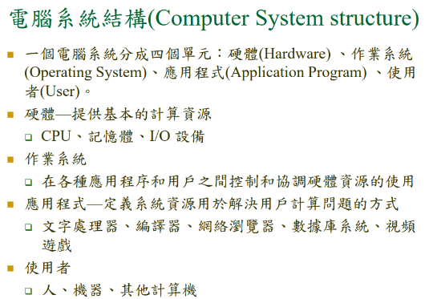
四個單元是什麼？（由下往上看最直覺）
(1) 硬體 Hardware：提供基本計算資源
投影片列：CPU、記憶體、I/O 設備。
意思是硬體負責「真的做計算與資料搬運」：
CPU：執行指令
記憶體：放正在用的程式/資料
I/O：跟外界交換資料（磁碟、網路、鍵鼠、螢幕…）
(2) 作業系統 Operating System：控制與協調硬體資源
投影片重點句：在各種應用程式和用戶之間控制和協調硬體資源的使用。
白話就是：OS 像「資源管理員」：
誰可以用 CPU、用多久（排程）
誰可以用多少記憶體、彼此不能亂踩（記憶體管理/保護）
I/O 怎麼做、什麼時候完成、誰先誰後（裝置管理/driver/中斷）
所以 OS 在中間把硬體包起來，讓上層「不用直接碰硬體」。
(3) 應用程式 Application Programs：用系統資源解決使用者問題
投影片列的例子：文字處理器、編譯器、瀏覽器、資料庫、遊戲。
它們的本質是：定義「怎麼用系統提供的資源」完成某種工作。
例如：
瀏覽器用網路/檔案/顯示資源來呈現網頁
編譯器用 CPU/記憶體/檔案系統把程式轉成機器碼
但應用程式通常不是直接操控硬體，而是透過 OS 提供的 API / system call。
(4) 使用者 User：人、機器、其他電腦
投影片提醒你：使用者不只人，還可能是其他電腦或自動化系統（例如另一台機器透過網路呼叫你的服務）。
用一個具體例子串起來（你比較好記）
你用瀏覽器看影片：
使用者：點播放
應用程式：瀏覽器解碼/排版/控制播放
作業系統：提供網路收包、檔案快取、音效輸出、畫面呈現、排程與記憶體
硬體：CPU/GPU 做運算，網卡收資料，喇叭/螢幕輸出
ISA（Instruction Set Architecture）
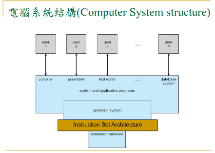
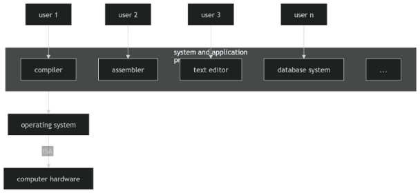
為什麼圖中間要特別放一條 ISA？
ISA（Instruction Set Architecture）在這張圖的位置非常重要：它是硬體對軟體「承諾」的一套規格，定義 CPU 對外可見的行為與能力，因此常被稱為硬體/軟體界面。
用更具體的說法：ISA 會規範（至少）這些東西：
- 有哪些機器指令（add/load/jump…）、指令怎麼編碼
- 有哪些暫存器、資料型別
- 記憶體存取模型（位址模式等）、例外/中斷處理、I/O 模型
- 這些都屬於「程式員可見（programmer-visible）」的規格。
因此： - 同一個 ISA（例如 x86-64、Armv8）可以有很多不同的 CPU 實作（不同微架構、不同效能/功耗），但都能跑同一套二進位程式，因為它們遵守相同 ISA。
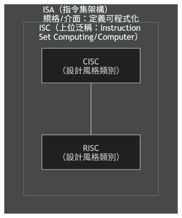
## CISC（Complex Instruction Set Computing）
- x86 / x86-64（Intel、AMD 主流桌機/伺服器 ISA；常被描述為主要屬於 CISC、且指令長度可變）
- 處理器例：Intel Core / Xeon、AMD Ryzen / EPYC（都跑 x86-64）
- VAX（DEC 的經典架構，常被當作 CISC 代表例）
## RISC（Reduced Instruction Set Computing）
- RISC-V（名稱就直接寫明是 RISC 設計；常被描述為 load-store 型的 RISC ISA）
- 處理器例：各家 RISC-V 核心/SoC（SiFive 等生態系）
- ARM（廣泛被歸類為 RISC 家族；手機/嵌入式很常見）
- 處理器例：Apple Silicon（arm64）、高通 Snapdragon（arm）、很多 IoT/MCU
## 差異
### 1\) 核心差異：一條指令做多少事
CISC（Complex Instruction Set Computing）
- 特色：單一指令可能包含多個低階動作（例如從記憶體載入、做運算、再寫回記憶體），或支援較多/較複雜的定址模式與多步驟操作。
- 直覺：讓「每條指令」更有「表達力」，程式可能用較少條指令完成同件事。
RISC（Reduced Instruction Set Computing）
- 特色：把「每條指令要做的事」縮小，強調簡單操作；常見的設計是 load/store 架構：只有 load、store 會碰記憶體，算術/邏輯運算主要在暫存器之間進行。
- 直覺：用「更多條但更簡單的指令」去組合出複雜行為，換取更容易做高速 pipeline。
### 2) 效能思維：CPI vs 指令數
兩者其實是在做同一個取捨：
- CISC：希望用「較少指令」完成工作，但每條可能較複雜、解碼與執行週期可能較多。
- RISC：可能需要「更多指令」組合出同樣功能，但讓每條指令更容易達成低 CPI、深 pipeline、高吞吐。
電腦系統啟動
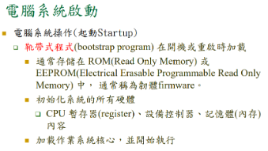
boot 是什麼
boot / booting 指電腦從上電或重開後，依序完成硬體初始化、找到可開機裝置、載入作業系統，直到系統可用的整個過程。
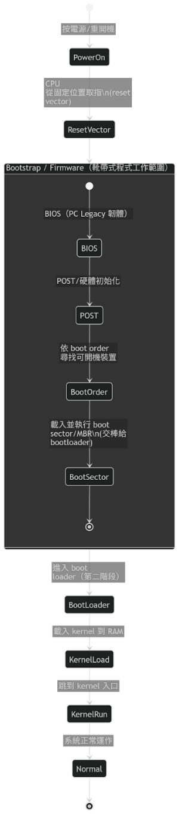
計算機組織Computer System Organization
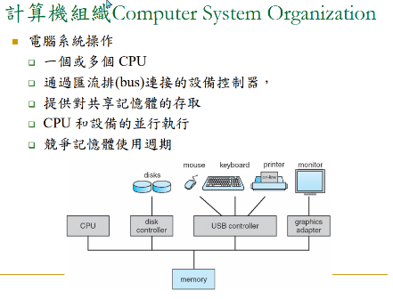
把圖畫更清楚：
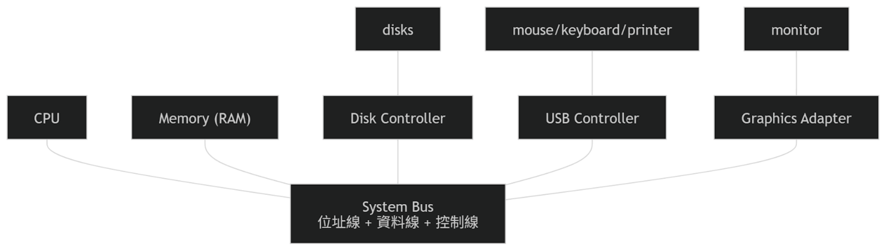
匯流排用交通來比喻：
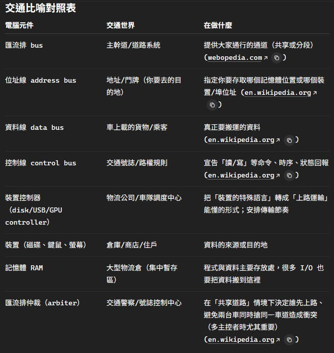
bus 本質上是什麼
從硬體角度看，bus 是什麼
在實體上，bus 可以是：
主機板上的銅線/trace
一組訊號線
有時是序列連線
搭配時脈、握手、請求/授權等控制機制
也就是說，bus 不是抽象名詞而已，它真的對應到電路上的通路。Wikipedia 對 bus 的定義就是：一種在電腦元件間傳資料的 communication system，本質上是共享的 physical pathway。
電腦系統操作
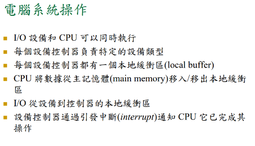
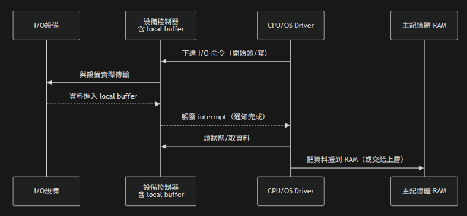
I/O 設備就是 輸入/輸出設備（Input/Output devices），也常叫周邊設備（peripherals）：負責讓電腦跟外界交換資料的硬體。
- 輸入設備：把外界資訊送進電腦，例如鍵盤、滑鼠、掃描器、麥克風、攝影機。
- 輸出設備：把電腦處理結果呈現/送出去，例如螢幕（monitor）、印表機、喇叭、投影機。
- 同時可輸入也可輸出：例如硬碟/SSD（可讀可寫）、網路卡（收發資料）。
這張圖是在用「時序圖（sequence diagram）」把一次典型的 I/O（以讀取為例、非 DMA 版本）畫出來：誰在什麼時間點做什麼事、資料走哪裡、以及中斷什麼時候發生。
我按圖上的四個角色（由左到右）逐段解釋：
角色是誰
1. I/O 設備
例如磁碟、鍵盤、網卡等真正產生/接收資料的硬體。
2. 設備控制器（含 local buffer）
連接設備的硬體，
負責跟設備溝通，並有一個本地緩衝區（local buffer）暫存資料。
設備控制器：港口的貨運站/轉運中心
* 會看得懂船的協定（裝置協定）
* 也看得懂陸運規格（匯流排/主機介面）
* 有暫存倉（local buffer）
* 貨到就通知總部（interrupt 通知 CPU）
- CPU/OS Driver
CPU 在執行 OS 的驅動程式：下命令、處理中斷、把資料搬來搬去。
4. 主記憶體 RAM
程式真正要用的資料最後會放到 RAM（或從 RAM 拿出去）。
流程逐步對照圖上的箭頭
(1) CPU/OS Driver 下達 I/O 命令（開始讀/寫）
圖上「下達 I/O 命令」那條箭頭是：Driver 寫控制器的暫存器/命令，告訴控制器開始做 I/O。
白話：CPU 跟控制器說「去幫我讀磁碟的某段資料」。
(2) 控制器與設備實際傳輸
左邊那段「與設備實際傳輸」表示：控制器開始跟 I/O 設備溝通，CPU 不用自己去跟設備一筆一筆傳。
重點：這段時間 CPU 可以去做別的事（投影片的「I/O 設備和 CPU 可以同時執行」就是指這裡）。
(3) 資料進入 local buffer
圖上「資料進入 local buffer」那條虛線箭頭表示：設備回來的資料先進控制器的緩衝區。
重點：local buffer 是控制器自己的暫存區，用來吸收裝置速度差/分批接收資料。
(4) 控制器觸發 interrupt（通知完成）
中間那條「觸發 interrupt」是關鍵：控制器完成 I/O 後，用中斷叫 CPU 來處理後續。
白話：控制器按門鈴說「我讀好了」。
(5) CPU 讀狀態 / 取資料
圖上「讀狀態/取資料」表示：CPU 進入中斷處理流程（ISR/driver），讀控制器狀態、確認完成，並準備把資料從 local buffer 搬走。
(6) 把資料搬到 RAM（或交給上層）
最右邊那條「把資料搬到 RAM（或交給上層）」表示：在非 DMA 模式下，CPU/driver 會用程式把資料從 local buffer 複製到主記憶體 RAM，然後上層程式才拿得到。
白話：把「控制器暫存區」裡的貨搬到「倉庫（RAM）」裡，應用程式才好用。
這張圖最想讓你記住的三件事
1. 控制器≠設備：控制器負責協定與緩衝（local buffer）。
2. CPU 和 I/O 可以並行：I/O 做事時 CPU 不必忙等。
3. 完成通知靠 interrupt：不是 CPU 一直問「好了沒」。完成後才把資料搬進 RAM（非 DMA）。
中斷的操作
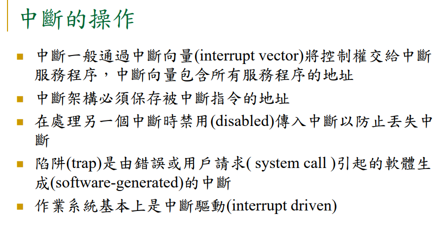
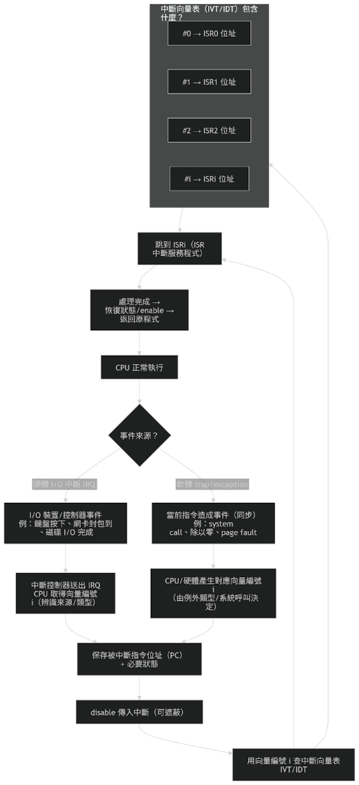
下面我用你那張簡圖（CPU 正常執行 → 中斷發生 → 保存 PC → disable → 查向量表 → 跳到 ISR → 恢復/enable → 回去）逐步詳細解釋。每一步我都會標出：
* 這一步主要是硬體在做，還是軟體（OS/driver）在做
* 生活中看得到的類比
* 以及和你投影片句子怎麼對上
最後我會把 ISR（中斷服務程式）講得更細（它到底做什麼、為什麼要短、怎麼避免出事）。
步驟 0：CPU 正常執行
圖上：CPU 正常執行
硬體在做什麼
CPU 在執行目前的指令流（可能是 Chrome 的 user mode 指令，也可能是 OS 的 kernel code）。如果真的沒事做，OS 可能讓 CPU 進入 idle，等事件來再被喚醒（這本質上也靠中斷喚醒）。
生活比喻
你正在看書/做作業，照著頁面一行一行往下做。
步驟 1：中斷發生（你剛剛改完整的那段）
圖上：中斷發生：CPU 偵測到 IRQ/Trap…取得向量編號 i
硬體在做什麼
中斷不是「CPU 存一個中斷訊號」，而是 CPU 偵測到一個中斷請求，接著辨識它是哪一種（用向量編號 i 表示）。來源可能是：
* 硬體 I/O：例如鍵盤、網卡、磁碟控制器完成 → 發硬體中斷 IRQ
* 軟體 trap/exception：例如 system call、除以零、page fault
生活比喻
門鈴響了（事件發生），你先確認是哪個門鈴（前門/後門/快遞/鄰居），這個「確認是哪一種」就像取得向量編號 i。
步驟 2：保存被中斷指令位址（PC）與狀態
圖上：保存被中斷指令位址（PC）
硬體在做什麼
CPU 必須能「處理完回來繼續跑」，所以要保存返回點（PC/RIP）和一些必要狀態（旗標、段寄存器等，依架構而定）。
以 x86 為例，進入 ISR 時 CPU 會把一些值壓到 stack（例如 EFLAGS、CS、EIP；x86-64 會是 RFLAGS、CS、RIP 等，還可能切換 stack）。OSDev 的整理很清楚。([wiki.osdev.org][1])
生活比喻
你被打斷前先放一張書籤：記下你看到第幾頁第幾行，等處理完事情才回得去。
為什麼這一步超重要
沒有保存 PC，你處理完 ISR 就不知道回哪裡，程式直接亂掉。
步驟 3：disable 傳入中斷（遮蔽可遮蔽中斷）
圖上：disable 傳入中斷
硬體/軟體在做什麼
很多架構會在進入「中斷門（interrupt gate）」時自動把可遮蔽中斷關掉（或由 ISR 早期自己關），避免你在 ISR 還沒把狀態保護好就又被打斷。
x86 上這件事常用 IF（Interrupt Flag）控制；CLI/STI 可清/設 IF；不少教材會直接寫「clear IF to disable interrupts」。([Computer Architecture Stony Brook Lab][2])
生活比喻
你正在處理一通緊急電話時，先把另一支手機設成靜音/勿擾，避免同時又進來第二通把你搞亂。
或像你在過馬路指揮交通時，先短暫把某方向紅燈拉起來，避免車流互相衝突。
重要更正
disable 的通常是「可遮蔽硬體中斷（maskable interrupts）」；像某些緊急等級（NMI）或某些例外不一定受 IF 影響。
步驟 4：用向量編號 i 查中斷向量表（Interrupt Vector Table / IDT）
圖上：用向量編號 i 查中斷向量表
硬體在做什麼
CPU 取得向量編號 i 後，會去查一張表：第 i 格放的是「對應 ISR 的入口位址」。你投影片說「中斷向量包含所有服務程序的地址」指的就是這個 mapping。
OSDev 也明確說 ISR 的呼叫協定不同、且需要由 CPU 透過向量表機制跳轉。([wiki.osdev.org][1])
生活比喻
像消防局接到報案後，看「派遣表」：
* 火災 → 派消防車 A
* 車禍 → 派救護車 B
每個事件類型對應到不同隊伍的出動入口。
步驟 5：跳到 ISRi（進入 ISR，中斷服務程式）
圖上：跳到 ISRi（中斷服務程式）
硬體在做什麼
CPU 把 PC 設為 ISRi 的入口位址，開始執行 ISR。這一步是「控制權交給中斷服務程序」。
生活比喻
你把書放下，立刻去做那件「被叫去處理的事」。
步驟 6：ISR/中斷服務程式做什麼（這裡我講細）
ISR 是 Interrupt Service Routine / interrupt handler。它是一段「在中斷發生時被 CPU 直接跳去跑」的特殊程式，呼叫/返回規則跟一般函式不同。
ISR 是 CPU 透過中斷向量表直接跳轉執行的中斷處理程式。它的任務是：快速保存必要狀態、辨識中斷來源、完成時間敏感的最小處理、確認/清除中斷
ISR 典型要做的事（按實務順序）
1. 進來先保護現場（save more context）
硬體通常只保存一部分狀態；ISR（或 ISR 包裝碼）常會再把更多暫存器保存到 stack，避免破壞原程式的暫存器內容。教材常提醒 ISR 需要自己保存更多 context。
生活比喻：
你去處理事情前先把桌面整理好、把正在用的工具放回固定位置，避免回來時東西不見。
2. 辨識中斷來源、讀狀態
很多系統可能共享某些中斷線，或需要讀控制器的 status register 才知道「到底誰叫我」。
生活比喻：
門鈴響了你先看監視器/貓眼：是快遞、鄰居還是外送。
3. 快速做必要的立即處理（minimal, time-critical work）
例如：
* 鍵盤：把 scan code 讀走，丟進 buffer
* 網卡：把封包指標/描述子取走
* 計時器：更新 tick 計數
為什麼要快：ISR 太久會讓系統整體延遲變大（中斷延遲、排程延遲）。實務建議是 ISR 要短，重工作延後處理。
生活比喻：
你開門拿包裹時先把包裹放門口（快速），之後再慢慢拆箱（延後）。
4. 清除/回覆中斷（acknowledge/clear）
要告訴控制器「我已收到並處理」，不然它可能一直認為中斷沒被處理，導致重複進 ISR。
生活比喻：
你回覆訊息「收到」，對方才不會一直催你。
5. 喚醒等待者 / 排程後續工作
例如喚醒等待 I/O 的行程、或排程一個 bottom-half/softirq/工作執行緒去做較重的處理（依 OS 設計）。
生活比喻：
你通知家人「包裹到了」讓他們來拿，或把需要慢慢處理的事列到待辦清單稍後做。
ISR 如何返回
ISR 結尾不能用一般 ret，要用中斷返回指令（如 iret/iretq）把先前保存的旗標與 PC 還原，回到被打斷的指令流。
生活比喻：
事情處理完，回到書桌，照書籤的位置繼續讀。
步驟 7：恢復狀態/enable，回到原本程式
圖上：處理完成 → 恢復狀態/enable → 回到 CPU 正常執行
硬體/軟體在做什麼
* 重新 enable：如果先前遮蔽了可遮蔽中斷，會在安全時機開回來（或由 iret 恢復原旗標狀態）。([維基教科書][6])
* restore：把先前 push 的 PC/旗標/暫存器 pop 回來
* CPU 從原程式被打斷的位置繼續
生活比喻
把勿擾關掉，回到書桌，照書籤繼續讀。
把整張圖用一個生活故事串起來
你在寫作業（CPU 正常執行）
門鈴響（中斷發生）
你先插書籤（保存 PC/狀態）
先把手機靜音避免再被打斷（disable）
看派遣表決定要做什麼（查向量表）
去處理門口的事（ISR：看是快遞、簽收、把包裹放好、回覆收到）
回來解除靜音、照書籤繼續寫作業（restore/enable/return）
你可以用這句話總結（考試很好用）
中斷發生時，CPU 保存返回點（PC/狀態），暫時遮蔽可遮蔽中斷，根據向量編號查向量表跳到對應 ISR；ISR 快速處理事件並清除中斷，最後用中斷返回恢復狀態回到原程式，形成 interrupt-driven 的事件驅動運作方式。
硬體 I/O 中斷 IRQ vs 軟體 trap/exception
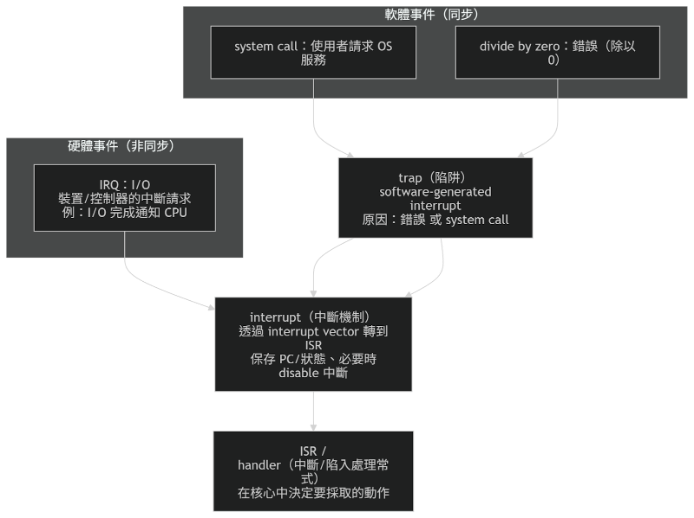
下面把你列的兩大類事件（硬體 I/O 中斷 IRQ vs 軟體 trap/exception）用同一套框架講清楚：它們都是讓 CPU「暫停目前流程 → 進入對應 handler → 回來繼續」的事件，但差在 來源、時機（同步/非同步）、目的、以及典型例子。教材常用這個分類：外部事件（I/O、timer）→ 非同步 interrupts；執行指令造成或刻意觸發（system call、除以零、page fault）→ 同步 exceptions/traps/faults。
1) 硬體 I/O：鍵盤、網卡、磁碟控制器完成 → 發硬體中斷 IRQ
1.1 什麼是硬體中斷 IRQ
硬體中斷（通常講 IRQ）是「外部裝置事件」造成的，特性是 非同步（asynchronous）：它跟你 CPU 正在執行哪一條指令沒有必然關係，可能在任何時間點到來。
你可以把它想成：裝置/控制器在按門鈴說「我這邊有事要你處理」。
生活例子：網卡封包到達
* 網卡收到封包（外部事件）
* 網卡/控制器發出中斷通知 CPU
* CPU 進入網卡的中斷處理（ISR），把封包的資訊記下來/排入隊列，之後交給網路協定堆疊慢慢處理
這正是教材常用的例子：「network card generates an interrupt to signal that a packet has arrived」。 ([linux-kernel-labs.github.io][2])
生活例子：磁碟 I/O 完成
* 你要求讀檔後，磁碟控制器在背景做事
* 完成後控制器用中斷通知 CPU：「資料好了」
OS 再去收尾、喚醒等待讀檔的行程（例如你的播放器、Chrome）。這跟你前面投影片「I/O 完成用 interrupt 通知 CPU」完全對應。
2) 軟體 trap/exception：system call、除以零、page fault
軟體中斷的主要目的是為了切換到 kernel mode。
這一類共同點是 同步（synchronous）：一定跟「正在執行某一條指令」綁定——在相同程式狀態下，執行到那條指令就會發生。
而且它們常被統稱為 exception（例外），其中又常細分為 fault / trap / abort（不同架構用詞略有差異）。
CPU 本來就在執行；但 trap/exception 的存在是為了讓 CPU 在執行過程中遇到「需要 OS 介入或需要立即處置」的情況時，有一條標準、可回復（保存 PC/狀態）、可保護（切到 kernel mode）的控制轉移路徑。
應用程式跑在 user mode（限制多，不能直接碰硬體）
需要 OS 服務或發生事件時（IRQ/trap/exception），CPU 會保存當前狀態，切換到 kernel mode，透過向量表進入對應 handler（ISR）。
handler 做完後用中斷返回機制恢復狀態，回到原本被打斷的地方（可能回 user，也可能回 kernel）。
OS 是 Operating System 的縮寫，中文是 作業系統。
2.1 System call（系統呼叫）為什麼算 trap？
system call 是應用程式想請 OS 幫忙做「特權事情」（讀檔、開網路、建行程…）時用的入口。它通常透過一條特殊指令讓 CPU 從 user mode 進入 kernel mode，這個控制轉移在很多教材語境下就叫 trap（刻意觸發的同步例外）。 ([linux-kernel-labs.github.io][2])
生活例子：Chrome 讀檔、連網
Chrome 想讀快取檔或送網路封包：
* 它不能直接操作磁碟控制器/網卡（權限不夠）
* 它呼叫 OS API → 進入 system call → kernel 幫它做
在 x86 上，歷史上 32-bit Linux 會用 `INT 0x80`（軟體中斷）觸發系統呼叫；64-bit 多用 `SYSCALL`。
2.2 除以零（divide by zero）屬於哪種？
除以零是 CPU 在執行某條算術指令時偵測到「不合法/無法完成」而產生的同步例外（exception）。它不是裝置按門鈴，而是 CPU 自己在執行當下那條指令時「當場發現錯誤」。
生活例子
你在算數算到「10 ÷ 0」那一步就卡住，必須交給「規則/老師」處理：要嘛丟錯誤、要嘛終止程式（例如你看到的 crash/exception）。
2.3 Page fault（缺頁）是什麼？為什麼很重要？
page fault 是一種由 MMU 觸發的例外：程式存取某個虛擬位址時，發現對應頁面不在 RAM、或權限不允許，MMU 會拋出 page fault，交給 OS 核心處理。 ([維基百科][5])
兩種典型情況（最常考）
1. 合法的缺頁（valid page fault / demand paging）
頁面只是「還沒載入 RAM」，OS 會把它從磁碟/交換區載入、更新頁表，然後讓程式重試該指令。這是虛擬記憶體能成立的關鍵機制。 ([維基百科][5])
2. 非法存取（invalid page fault）
例如亂指標、越權寫入不可寫頁面，OS 可能直接送訊號/終止行程（你看到的 segmentation fault 類型現象）。 ([xv6 Labs @KUL][6])
生活例子（很好懂）
你在書桌（RAM）找某份資料，發現桌上沒有，但資料其實在倉庫（磁碟）：
* 合法缺頁：去倉庫把資料搬上桌，再繼續做事
* 非法缺頁：你要的根本不是你的資料/位置不存在 → 被禁止或被趕出去
3) 一張超精簡對照（幫你背）
| 類型 | 來源 | 同步/非同步 | 例子 |
|---|---|---|---|
| 硬體中斷 IRQ | 外部裝置/計時器 | 非同步 | 鍵盤、網卡封包到、磁碟完成 |
| trap/exception | 執行指令造成或刻意觸發 | 同步 | system call、除以零、page fault |
user mode / kernel mode
中斷/陷入（trap）的主要目的是提供一個受控入口，讓程式能從 user mode 進入 kernel mode 來呼叫作業系統服務（system call），並在處理完後安全返回。
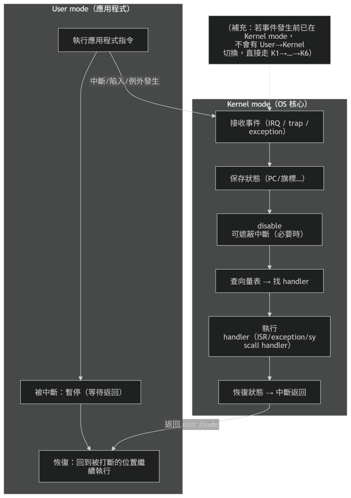
中斷處理
1) OS 用暫存器與 PC 保持 CPU 狀態是什麼意思？
中斷發生時，CPU 原本正在執行某個程式。要能「處理完中斷再回去繼續跑」，就必須先記住當下的執行狀態（context），最核心的是：
PC（Program Counter，程序計數器）：下一條要執行的指令位址
registers（暫存器）：目前計算到一半的中間值、指標、狀態旗標等
白話：你被打斷前先放書籤（PC），桌上工具先收好/記下來（registers），處理完事情才能回原位繼續。
實務上，這些狀態可能一部分由硬體自動存（例如 PC/旗標），其餘由 OS/ISR 的「入口程式」再補存到堆疊（stack）裡。
2) 確定發生哪種類型的中斷：Polling vs Vectored
中斷來了以後，OS/硬體要知道「是哪個裝置、哪種原因」叫你。投影片列兩種方法：
(A) 輪詢 Polling
概念：中斷控制器（或 CPU/OS）收到「有人中斷」後，去問每個裝置：「是不是你發的？」直到找到來源。
白話：教室有人喊「老師！」，老師要一個一個問：「是你嗎？是你嗎？」才知道誰舉手。
特點：
優點：設計簡單
缺點：裝置多時很慢，CPU 浪費時間在問人
(B) 向量中斷 Vectored interrupt
概念：中斷訊號裡就帶有「身分/編號」（vector），讓 CPU 直接跳到對應的中斷服務程式（ISR）。
白話：有人喊「老師！我（3號）有問題！」老師立刻知道是誰、要處理哪一類問題，不用逐一問。
特點：
優點：快速定位來源、效率高
缺點：硬體/設計較複雜（需要向量/表格）
你前面學過的 interrupt vector table（中斷向量表）就是向量中斷常見的落地形式：用編號 i 直接對到 ISRi 的入口位址。
3) ISR（Interrupt Service Routine）是什麼？
投影片最後一句：ISR 是一段獨立程式，決定「這種類型的中斷要採取什麼動作」。
把 ISR 想成「針對某個事件的標準處理流程」，例如：
鍵盤中斷：把按鍵資料讀出來放進緩衝區
網卡中斷：把封包收進記憶體、通知網路堆疊
磁碟 I/O 完成：標記完成、喚醒等待讀檔的行程
ISR 做完後，會恢復先前保存的 PC/registers，讓 CPU 回到原本程式繼續跑。
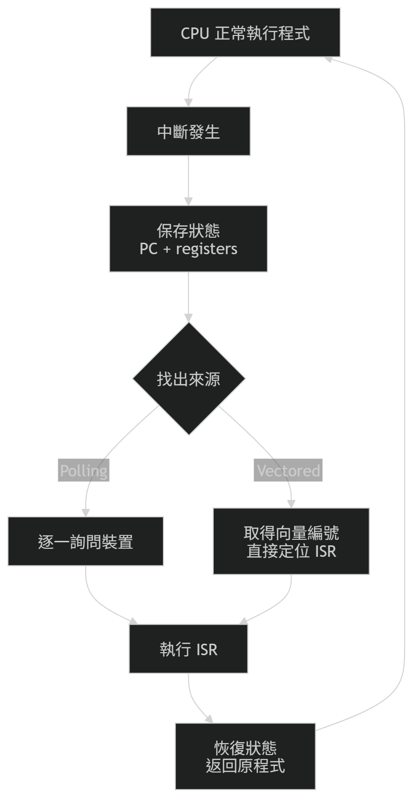
ISR 跟 ISA 的關係是甚麼
先把兩個名詞釐清，才能看懂它們的關係。
定義
* ISR（Interrupt Service Routine，中斷服務程式 / handler）：作業系統（或驅動）的一段程式碼，負責處理某種中斷/例外事件。你們 Chapter 1 也直接寫「中斷服務程序(Interrupt service routine)：獨立的程式段決定了每種類型的中斷應該採取什麼行動」。
* ISA（Instruction Set Architecture，指令集架構）：CPU 對軟體的「規格/介面」，不只包含指令，還包含特權模式、例外/中斷如何進出、向量表/返回指令等機制（你們 Chapter 1 把 ISA 放在 OS 與 hardware 之間就是這個意思）。
ISR 跟 ISA 的關係（重點）
ISR 是軟體；ISA 是規格。ISR 之所以能被呼叫、能安全地回來，靠的就是 ISA 定義好的中斷/陷入機制。
1. ISA 定義「怎麼進入 ISR」
* 事件發生後，CPU 要把 PC 存起來、記錄原因、跳到哪個位址開始跑 handler，這些流程和資料結構是 ISA/特權架構規定的。
* 例：RISC-V 規定 trap 進來會跳到 `mtvec` 指定的向量表位置，並把當前 PC 存到 `mepc`，再由 handler 處理。([CORE-V Documentation][1])
2. ISA 定義「怎麼從 ISR 回去」
* ISR 不能用一般 `ret` 回去，而是用 ISA 提供的「中斷/陷入返回指令」把 PC/狀態恢復。
* 例：RISC-V 用 `MRET/SRET` 返回，並把 `pc` 設回 `xepc`。([riscv-specs.timhutt.co.uk][2])
- 例：x86-64 用
iretq類的中斷返回機制恢復指令位址/旗標等。([docs.rs][3])
3. ISR 必須「依照 ISA 的規則」來寫
* 哪些暫存器硬體會自動保存、哪些要 ISR 自己保存到 stack、向量表長什麼樣、特權層級怎麼切換，這些都因 ISA 不同而不同。
* 所以同一個 OS 概念（例如鍵盤中斷）在 x86 與 RISC-V 上，ISR 外圍的保存/返回細節會不一樣。
一張圖（把關係畫出來）
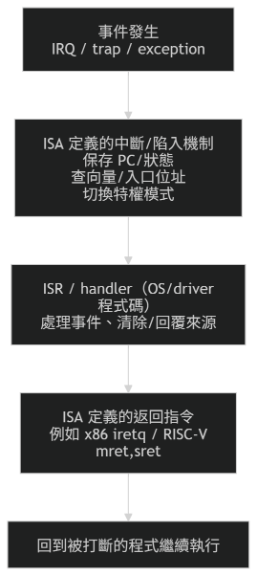
儲存體階層(Storage Hierarchy)
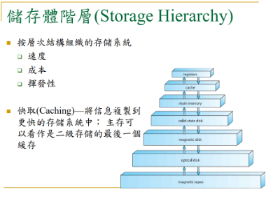
這張投影片在講「儲存體階層（Storage Hierarchy）」：電腦的儲存不是只有一種，而是分成很多層，越靠近 CPU 越快但越貴越小，越遠離 CPU 越慢但越便宜越大，而且「揮發性」也通常跟層級一起改變。
1) 為什麼要有儲存體階層？
因為不可能同時滿足三件事：
非常快
非常大
非常便宜
所以電腦用分層折衷：把「常用的」放在快而小的地方，把「不常用但很大量的」放在慢而大的地方。這就是階層式儲存的出發點。
2) 這張圖每一層是什麼？（由上到下）
投影片右邊的堆疊大致是：
1.registers（暫存器）
在 CPU 裡面，最快、容量最小，CPU 做運算時直接用它。
2.cache（快取）
L1/L2/L3 等級，介於暫存器和主記憶體之間，目的就是減少 CPU 等 RAM 的時間（RAM 延遲很容易成為瓶頸）。
3.main memory（主記憶體 RAM）
程式真正執行時的主要工作區，速度比 cache 慢很多，但比 SSD/HDD 快非常多。
4.solid-state disk（SSD）
非揮發性、容量大，讀寫比 HDD 快，但還是比 RAM 慢很多。
5.magnetic disk（磁碟 HDD）
非揮發性、容量大、便宜，但機械式讀寫更慢。
6.optical disk（光碟）
多用於散佈/備份，存取更慢、使用頻率低。
7.magnetic tapes（磁帶）
典型用於長期封存/備份，容量大、單位成本低，但存取通常是序列式，非常慢。
3) 這張投影片列的三個衡量軸：速度、成本、揮發性
投影片說階層式儲存會按這三個特性排列：
速度：越上層越快（register/cache 最快；磁帶最慢）
成本：越上層每 GB 成本越高
揮發性（Volatility）：越上層越容易斷電就消失
一般教材的典型結論是：register、cache、RAM 是揮發性；RAM 以下多半是非揮發性。
生活比喻（你看得到的）
暫存器/快取：你手上正在用的筆、橡皮擦（拿起來最快）
RAM：你桌面上攤開的書本與筆記（很快拿到，但桌子空間有限）
SSD/HDD：你房間書櫃（容量大但要起身找）
磁帶：倉庫封存箱（超大、超便宜，但要找很久）
4) 什麼是快取（Caching）？為什麼主記憶體被說成是「最後一個快取」？
投影片的快取定義是：把資訊複製到更快的儲存系統中（暫時）。
流程通常是：
先看快的那層有沒有（hit）
沒有再去慢的那層拿（miss），並把拿到的資料複製到快的那層，假設「很可能很快又會用到」。
為什麼說「主記憶體可以看作是二級儲存的最後一個緩存」？
對 SSD/HDD 來說，RAM 就像它的快取：檔案從磁碟讀進來後，OS 會把常用資料留在 RAM（page cache/buffer cache），之後同樣資料就不用再慢慢讀磁碟。
5) 啥是二級存儲
你問的「二級儲存」就是 Secondary Storage（也常叫 Secondary memory / secondary storage），指的是：
不是 CPU 直接拿來執行程式的主記憶體（RAM），而是用來長期保存資料、斷電不會消失、容量大但速度比較慢的儲存裝置。
在你那張「儲存體階層」圖裡，二級儲存大致就是 RAM 下面那些：
* SSD（solid-state disk）
* HDD（magnetic disk）
（有些教材也把光碟、磁帶算更低層的 tertiary/offline storage，但廣義上也都屬於非揮發性外部儲存）
白話比喻：
* RAM（主記憶體）＝桌面上攤開正在用的資料（快但桌子有限、關機就沒）
* 二級儲存（SSD/HDD）＝書櫃/硬碟裡的檔案（大、保存久，但要拿比較慢）
為什麼投影片會說「主記憶體可視為二級儲存的最後一個快取」：
因為你從 SSD/HDD 讀檔後，OS 會把資料留在 RAM 當快取（page cache），下次再讀同一份檔案就可能直接從 RAM 拿，不用再慢慢讀磁碟。
儲存體結構(Storage Hierarchy)
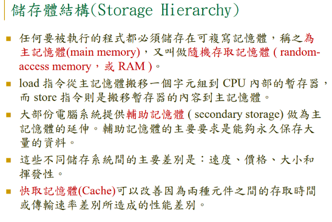
這張投影片是在用「程式如何被 CPU 執行」的角度，重新講一次儲存體階層（Storage Hierarchy）的核心觀念：程式要跑一定得在 RAM；CPU 透過 load/store 在暫存器與 RAM 之間搬資料；RAM 不夠大或要永久保存就靠 secondary storage；不同層差在速度/價格/大小/揮發性；cache 用來縮小速度落差造成的效能問題。
我按投影片每個 bullet 逐條解釋。
1) 程式要執行，必須先在主記憶體（RAM）
投影片第一點：
任何要被執行的程式都必須儲存在可複寫記憶體，稱為主記憶體（main memory），又叫 RAM。
白話：CPU 不能直接從 SSD/HDD 上「一邊讀一邊跑」一般程式（至少在你這門課的抽象模型下），通常必須先把程式載入 RAM，CPU 才能以足夠快的速度取指令、取資料來執行。
生活例子：
書櫃（SSD/HDD）上的書不能隔著書櫃就讀，你要把書拿到桌上（RAM）攤開才能快速翻閱。
2) load / store：暫存器 ↔ RAM 的搬運動作
投影片第二點：
load：從主記憶體搬一個字元組到 CPU 內部暫存器
store：把暫存器內容搬回主記憶體
白話：CPU 真正「運算」通常在暫存器做，RAM 只是放資料；所以資料要用時就 load 進暫存器，用完就 store 回去。
你可以用一個最常見的例子理解：
x = x + 1- load x（RAM → register）
- register 裡做 +1
- store x（register → RAM）
這也是很多 ISA（尤其 RISC）強調的觀念：計算在暫存器，記憶體存取用 load/store 分開做。
3) secondary storage（輔助記憶體）是主記憶體的延伸
投影片第三點：
大部分電腦系統提供輔助記憶體作為主記憶體的延伸，主要要求是能永久保存大量資料。
白話：
- RAM 快但小、且斷電會消失（揮發性）
- SSD/HDD 慢但大、且資料能長期保存（非揮發性）
所以 secondary storage 的定位就是「放得多、放得久」。作業系統會負責把需要執行/常用的資料搬到 RAM（例如程式載入、檔案快取、swap）。
生活例子：
桌面（RAM）不夠就把東西收回書櫃（SSD/HDD），需要再拿出來。
4) 不同儲存系統差在哪：速度、價格、大小、揮發性
投影片第四點就是階層的四個維度：
- 速度：register/cache > RAM > SSD > HDD（大致）
- 價格（每 GB）：越快通常越貴
- 大小：越快通常越小
- 揮發性：越上層通常越揮發（RAM 以上斷電就沒）
這四個就是你看任何 storage hierarchy 圖都會寫的理由：不可能同時又快又大又便宜又不掉資料，所以必須分層。
5) Cache：用來縮小不同元件間速度差造成的效能差
投影片最後一點：
快取記憶體（cache）可以改善因為兩種元件存取時間/傳輸速率差異造成的效能差別。
白話：CPU 很快、RAM 比 CPU 慢很多、SSD 更慢。
如果每次 CPU 都要等 RAM/SSD，效能會爆炸差。
cache 的做法是：
- 把「很可能快要再用到」的資料複製到更靠近 CPU、更快的地方
- 下次再用就命中（hit），不用再去慢的地方拿
生活例子：
你做筆記時，常用的筆放手邊（cache），不常用的工具放抽屜（RAM/SSD），要用時才去拿。
6)一張圖把投影片串起來（資料怎麼流）
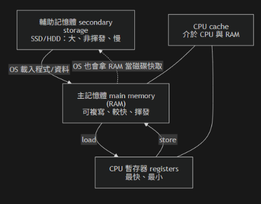
Memory Technology（記憶體實作原理與技術種類）
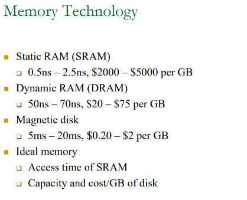
這張投影片在用一張表把三種常見儲存/記憶體技術做對比，並用「理想記憶體」點出為什麼一定需要儲存體階層（register/cache/RAM/SSD/HDD）與快取（caching）。
1) 這張表在比什麼
它列了每種技術的兩個指標：
- Access time（存取延遲）：從你提出讀取到資料真正可用的時間
- $ per GB（每 GB 成本）：同樣容量的價格差異
它想讓你看到：速度越快通常越貴、容量越難做大；速度越慢通常越便宜、容量越容易做大。
## 2) 先看時間單位：ns 跟 ms 差非常多
投影片把 SRAM/DRAM 用 ns（奈秒），磁碟用 ms（毫秒）。
* 1 ms = 1,000,000 ns
所以磁碟 5–20 ms 等級的延遲，其實是 5,000,000–20,000,000 ns，跟 DRAM 50–70 ns、SRAM 約 0.5–幾 ns 是「好幾個數量級」的差距。這也是很多教材會把磁碟延遲寫成 5,000,000–20,000,000 ns 的原因。(國立高雄大學資訊工程學系)
## 3) SRAM（Static RAM）是什麼？為什麼快但貴？
投影片給的量級：0.5–2.5 ns，\(2000–\)5000/GB
重點概念：
* SRAM 用鎖存器（常見 6 個電晶體一 bit）維持資料，不需要 refresh，所以延遲可以很低，但每 bit 需要的晶體管多，面積大、成本高、密度低。(Jonghoon Blog)
* 實際用途：CPU 快取（L1/L2/L3 cache）主要就是 SRAM，因為要極快。很多整理會把 L1 cache 的延遲放在約 1ns 等級。(Jonghoon Blog)
生活例子：
* SRAM 像你手上正在用的便條紙或你桌面最上面那一小塊空間：拿取超快，但面積很小、放不了多少，而且「每一小塊空間都很貴」。
## 4) DRAM（Dynamic RAM）是什麼？為什麼慢一些但便宜很多？
投影片給的量級：50–70 ns，\(20–\)75/GB
重點概念：
* DRAM 每 bit 結構更簡單（常見 1T1C：1 個電晶體 + 1 個電容），密度高、便宜、容量能做很大，但資料存在電容上會漏電，需要週期性 refresh，存取也牽涉 row activation、控制器排程等，所以延遲比 SRAM 高很多。(Jonghoon Blog)
* 實際用途：主記憶體（你電腦的 RAM）就是 DRAM。
生活例子：
* DRAM 像你的整張桌面：比手上便條紙大很多、能攤開很多資料，拿取也算快，但還是比「手上直接拿著的」慢。
## 5) Magnetic disk（HDD）是什麼？為什麼慢到 ms？
投影片給的量級：5–20 ms，\(0.20–\)2/GB
重點概念：
* HDD 是機械式：要先把讀寫頭移到正確磁道（seek），再等盤片旋轉到正確扇區（rotational latency），所以延遲在毫秒等級很正常。(維基百科)
* 常見桌機 HDD 平均 seek 大約 5–10 ms，整體 random access 常在約 10 ms 等級（不同機型不同）。(computerweekly.com)
生活例子：
* HDD 像你去書櫃找一本書：要走到書櫃、找位置、抽出來，單次動作就會比在桌上拿資料慢很多。
## 6) 什麼是「Ideal memory」？為什麼它是理想但做不到
投影片寫的理想記憶體同時想要：
* SRAM 的存取速度
* 磁碟的容量與每 GB 成本
這基本上是在說：我們想要又快又大又便宜，但現實受限於材料/電路結構/製程面積與功耗，速度、密度、成本很難同時最優。
所以現代電腦用的解法不是做出「一種完美記憶體」，而是做出階層與快取：
* 上面少量超快（register/cache）
* 中間較大但仍快（DRAM）
* 下面超大但慢（SSD/HDD）
* 再用 caching 把常用資料複製到上層，讓平均效能接近「理想」。(維蒙特大學)
Storage Definition and Notation（儲存定義以及表示法）
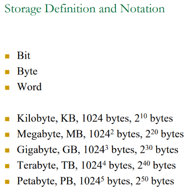
Bit（位元）
-
很多系統把 byte 當成記憶體最小可定址單位（addressable unit）。
Word（字）
-
word 是處理器「自然處理的資料寬度」，由架構決定，不是固定 8 bits 或固定 1 byte。維基百科+1
-
常見例子（用來建立直覺）：
-
32-bit 處理器：word 常是 32 bits = 4 bytes
-
64-bit 處理器：word 常是 64 bits = 8 bytes 維蒙特大學+1
生活例子
-
bit：燈泡開/關
-
byte：一個字元/小格子（例如 ASCII 字元可用 1 byte 表示）
-
word：CPU 一次「最順手搬運/運算」的一捆資料大小（跟你手掌一次能抓多少東西的概念類似）
Principle of Locality（局部性原則）
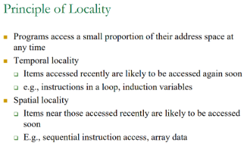
這張投影片在講快取/儲存體階層能有效的根本原因：局部性原理（Principle of Locality）。一句話：程式在任何時間點，其實只會用到整個位址空間的一小部分，而且用法有規律，所以把「可能會再用到的」先放在快的地方（cache/RAM）就能大幅加速。
1) 什麼是局部性原理？
投影片第一點：Programs access a small proportion of their address space at any time
意思是：雖然你的程式可能有很多 code/data，但在某一小段時間內，CPU 反覆接觸的其實是少數幾段記憶體（特定函式、特定迴圈、特定資料結構）。
生活比喻：
你書櫃裡有一堆書，但你今天寫作業只會一直翻同一本、同幾頁。
2) Temporal locality（時間局部性）
投影片說：最近被存取的項目，很可能很快又會被存取。
典型例子（投影片也給）：
- loop 裡的指令：迴圈每跑一次就重複用同一段指令
- induction variables：迴圈變數 i、累加器 sum 這種每次迭代都會用到
生活例子：
你正在算數學題，手上一直用同一支筆、同一張計算紙；剛用過的東西下一秒又要用。
對快取的意義： - 把剛用過的指令/資料留在 cache（或更上層），下一次就 cache hit，很快。
## 3) Spatial locality（空間局部性）
投影片說：最近被存取的項目附近的資料，很可能很快也會被存取。
典型例子（投影片也給）：
* sequential instruction access：程式通常一行一行往下執行指令（沒有跳來跳去時）
* array data：連續掃 array（a[0], a[1], a[2]…）
生活例子：
你在看課本，讀完這一行通常會讀下一行；不太會每讀一行就跳到另外一頁。
對快取的意義：
* cache 不是只抓「你要的那 1 個 byte」，而是抓一整塊（cache line，例如 64 bytes）
* 因為你拿了 a[i]，很可能接著會用到 a[i+1]、a[i+2]，提前抓一塊很划算。
## 4) 把局部性跟 OS 課的脈絡連起來（為什麼這張投影片重要）
局部性原理是「快取與階層式儲存為什麼能工作」的理論基礎：
* CPU cache：靠指令/資料的 temporal + spatial locality
* OS 的 page cache / buffer cache：檔案讀取常常也有局部性（最近讀的檔案、連續讀檔）
* 虛擬記憶體與 page fault：程式通常只會活躍在少數頁面（working set），所以不用把整個程式都放 RAM 也能跑得很快
## 5) 一張圖快速記（時間 vs 空間）
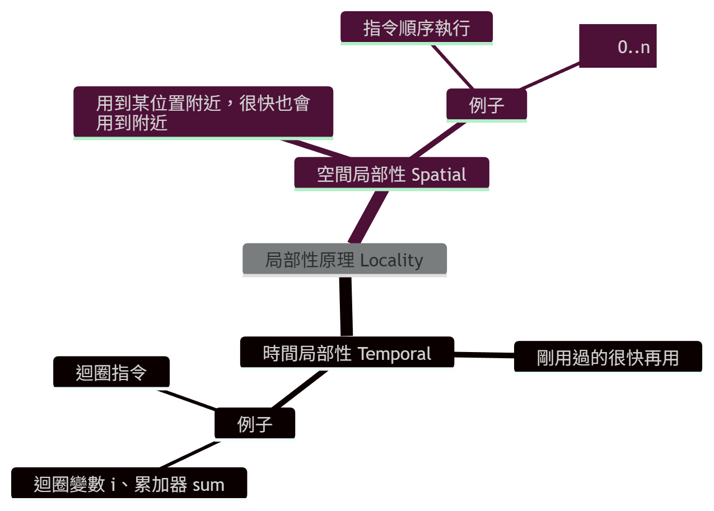
Taking Advantage of Locality（善用所在地優勢）
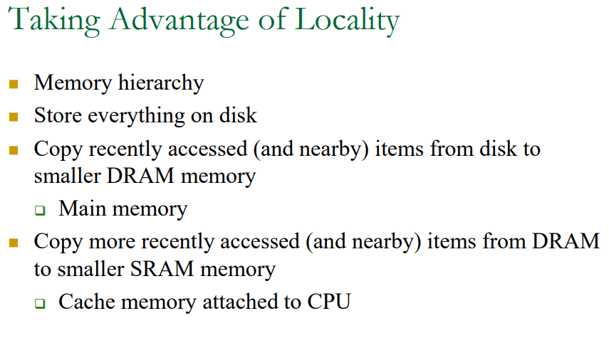
這張投影片在講：既然程式有局部性（剛用過的、附近的很快又會用到），我們就用「記憶體階層＋快取」去利用它，讓平均存取速度接近快的記憶體、但容量/成本接近慢的大儲存。
1) Memory hierarchy（記憶體階層）在做什麼
投影片的流程是分層搬運資料：
- Store everything on disk
大部分資料長期放在磁碟（SSD/HDD）上：容量大、便宜、非揮發，但慢。 - Copy recently accessed (and nearby) items from disk to smaller DRAM memory
把「最近用到的」以及「附近的」從磁碟複製到 DRAM（主記憶體 RAM）。
這其實就是 OS 的工作之一：檔案被讀進來後，常會留在 RAM 當快取（page cache/buffer cache），下次再用同一份資料就不用再讀磁碟。 - Copy more recently accessed (and nearby) items from DRAM to smaller SRAM memory
再把更常用的資料從 DRAM 複製到 SRAM（CPU cache）。
這通常是硬體自動做（L1/L2/L3 cache），目的就是讓 CPU 盡量命中 cache，少等 RAM。
## 2) 為什麼要強調「recently accessed and nearby」
因為這正好對應兩種局部性：
* recently accessed → 時間局部性（temporal locality）
* nearby → 空間局部性（spatial locality）
所以資料不是「隨機挑」放上層，而是照局部性去猜「接下來最可能用到的是哪些」。
## 3) 把它用生活例子記住
- 磁碟（disk）＝書櫃/倉庫：容量最大但拿最慢
- DRAM（RAM）＝桌面：常用資料先放桌上，拿比較快
- SRAM（CPU cache）＝手上/口袋：最常用的工具直接放手邊，拿最快
你做作業不會每次寫一行就去倉庫拿筆；你會把筆先放桌上，甚至拿在手上。這就是階層＋快取在做的事。
## 4) 一張圖把投影片內容畫出來
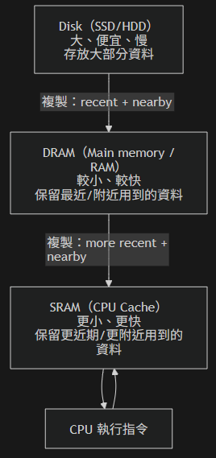
## 5) cache 用途
1. 防止/隱藏延遲（減少平均等待時間）
因為 RAM 比 disk 快、cache 比 RAM 快；命中上層就少等很多。
2. 存常用資料（更精準叫：最近/可能很快再用的資料副本）
這就是 temporal locality（剛用過的很快又會用）和 spatial locality（用到某位置附近很快也會用到）在支撐。
網路上的定義也一致：cache 會儲存 frequently/recently used data & instructions 來降低平均存取時間。
## 6) cache 可以改善因為兩種元件之間的存取時間或傳輸速率差別所造成的性能差別是啥意思
這句話的意思是：當兩個元件速度差很多（例如 CPU 很快、RAM 比較慢；RAM 快、SSD/HDD 很慢），如果每次都直接跟慢的那個互動，整體效能就會被拖垮。Cache 的作用就是在兩者中間放一個「更快的暫存層」，把「很可能很快又要用的資料」先留在快的地方，讓大多數存取都不用等慢元件，平均下來就快很多。(turn0search0)
## 先把「兩種元件」對應出來
你這頁在講的元件差異，常見就是：
1. CPU ↔ RAM
* CPU 執行很快，但 RAM 存取比 cache 慢很多，所以 CPU 常在「等資料」
* CPU cache（SRAM）放在中間，縮小延遲差距。(turn0search1)
2. RAM ↔ Disk（SSD/HDD）
* Disk 延遲是毫秒等級，RAM 是奈秒等級，差很多
* OS 會用 RAM 當磁碟快取（page cache），把最近讀過的檔案內容留在 RAM，下一次就不用再碰磁碟。(turn0search52)
## 「存取時間差別」是什麼？
存取時間（access time / latency）指的是「你要讀一筆資料，等多久才拿到」。
沒有 cache 的世界：
CPU 每次都等 RAM（或更糟等磁碟）→ CPU 常發呆
有 cache 的世界：
* hit：資料在 cache → 幾個 CPU cycle 就拿到
* miss：cache 沒有 → 才去 RAM/更下層拿
所以平均存取時間會被 hit 拉低。(turn0search3)
（那篇還給了公式：有效存取時間 = 命中率×cache時間 + 未命中率×主記憶體時間，命中率小小下降就會讓平均時間暴增。）(turn0search3)
## 「傳輸速率差別」是什麼？
傳輸速率（bandwidth/throughput）指的是「一秒能搬多少資料」。
cache 也能改善這件事，因為：
* 如果每次都去 RAM，匯流排（bus）會很忙、很塞
* 命中 cache 時就不用一直走到 RAM，減少主記憶體匯流排流量，整體傳輸更順。(turn0search0)
## 用生活比喻理解（你一定看得到）
- CPU：廚師
- RAM：廚房工作台（桌面）
- Disk：倉庫
- Cache：廚師手邊的小料盒/調味罐（最近常用的放手邊）
「改善效能差別」就是：
不要每切一次菜就跑去倉庫拿刀/鹽；把常用的先放手邊，你動作就連貫、速度就上來。
## 一句話總結
這句話在說：cache 透過保存最近/附近常用資料，讓多數存取命中快的那層，從而減少等待慢元件造成的延遲，也降低對慢通道（RAM/磁碟/匯流排）的依賴，使整體效能更接近「快的那個元件」而不是被「慢的那個元件」拖累。(turn0search1)
Caching(快取、緩存)
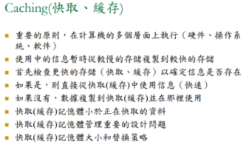
這句話在說的是：cache（快取/緩存）用來「縮小兩個元件速度差太大造成的效能落差」。你這張投影片的語境是儲存體階層，所以最典型的兩個「元件」就是：
- CPU ↔ RAM（RAM 比 CPU 慢很多）
- RAM ↔ SSD/HDD（磁碟比 RAM 慢好幾個數量級）
cache 的做法是：把「使用中的資訊」先複製到比較快的地方，先查快的那層（命中 hit 就超快），沒有才去慢的那層（未命中 miss 就慢），並把資料帶上來。這個描述和一般 OS/架構教材一致：先查 cache，miss 才從下層取並放入 cache；替換策略如 LRU。 (OCW UC3M)
下面我用投影片每一點逐條白話＋例子解釋。
## 1) 「重要的原則，在計算機的多個層面上執行（硬體、作業系統、軟體）」
意思：cache 不只一種地方會用到。
* 硬體：CPU 的 L1/L2/L3 cache（SRAM）
* 作業系統：用 RAM 當磁碟快取（page/buffer cache）
* 軟體：瀏覽器快取、DNS cache、應用程式把資料存在記憶體裡避免重算
生活例子：
你家也有多層「快取」：口袋（最常用的零錢）→ 書桌抽屜（常用文具）→ 房間櫃子（不常用）→ 倉庫（很少用）。
## 2) 「使用中的資訊暫時從較慢的存儲複製到較快的存儲」
意思：把可能很快要再用的資料放到快的地方。
* disk→RAM：你剛開過的檔案內容留在 RAM（下次讀更快）
* RAM→CPU cache：你剛用過的資料/指令留在 cache（下次 load 更快）
生活例子：
把常用調味料從大櫃子拿出來放料理台上。
## 3) 「首先檢查更快的存儲（快取/緩存）以確定信息是否存在」
這就是 hit/miss 的概念：
* hit（命中）：快取裡有 → 直接用
* miss（未命中）：快取裡沒有 → 去慢的地方拿
生活例子：
找筆：先摸口袋；沒有再找桌面；再沒有才去抽屜。
## 4) 「如果是，則直接從快取使用信息（快速）」
為什麼會快？因為快取離使用者（CPU）更近、延遲更低。
* CPU cache hit：不用等 RAM
* RAM page cache hit：不用等 SSD/HDD
你前面問過「hit 為何可以直接回資料」：因為 cache 本來就是「正確資料的副本」，程式只在乎值正確，不在乎來源層級。(en.wikipedia.org)
## 5) 「如果沒有，數據複製到快取並在那裡使用」
miss 的標準處理流程（教材常見描述）：
1. 去慢的一層取資料
2. 把取到的資料放進快取
3. 再把資料交給 CPU/程式使用
這段在 OS 的 page cache、硬體的 cache line fill 都是一樣的模式。(OCW UC3M)
生活例子：
你去書櫃拿書，拿回來會先放桌上，因為你知道等等還會翻。
## 6) 「快取記憶體小於正在快取的資料」
這句是在提醒：快取容量一定比下層小（不然就直接用快的那層就好）。
所以快取只能存一部分資料，而且會有「放不下怎麼辦」的問題。
生活例子：
你口袋放不下整間倉庫的東西，只能挑常用的帶身上。
## 7) 「快取（緩存）記憶體管理重要的設計問題」
既然快取小，就要設計管理方法：
* 放哪些資料進去（admission/placement）
* 滿了要丟掉誰（replacement/eviction）
* 寫入時要不要立刻寫回下層（write-through vs write-back）
投影片下一點就點出其中兩個核心：大小與替換策略。(OCW UC3M)
## 8) 「快取（緩存）記憶體大小和替換策略」
兩個關鍵問題：
### (A) 大小（size）
cache 大通常命中率更高，但更貴（SRAM 很貴）或更占 RAM（page cache 會吃掉可用記憶體），而且管理成本更高。
### (B) 替換策略（replacement policy）
當 cache 滿了，新資料要進來就要「趕走」某些舊資料。常見策略：
* FIFO：先進先出
* LRU：最久沒用的先丟（假設近期用過的更可能再用）
* Random：隨機丟
OS 課常用 LRU 舉例，因為它直接利用 temporal locality（時間局部性）。(印度科技大學邁達斯電腦科學與工程系)
生活例子：
書桌放滿了新講義要放進來：你會先把最久沒翻的那份移走（LRU），而不是把正在用的丟掉。
## 用一句話把「改善效能差別」說清楚
兩個元件速度差太大時（CPU↔RAM、RAM↔disk），系統會用 cache 把最近/附近常用資料放在更快的地方，提高命中率，讓大多數存取不用等慢元件，平均效能就大幅提升。 (Uplatz)
Memory Hierarchy Levels（記憶體階層）
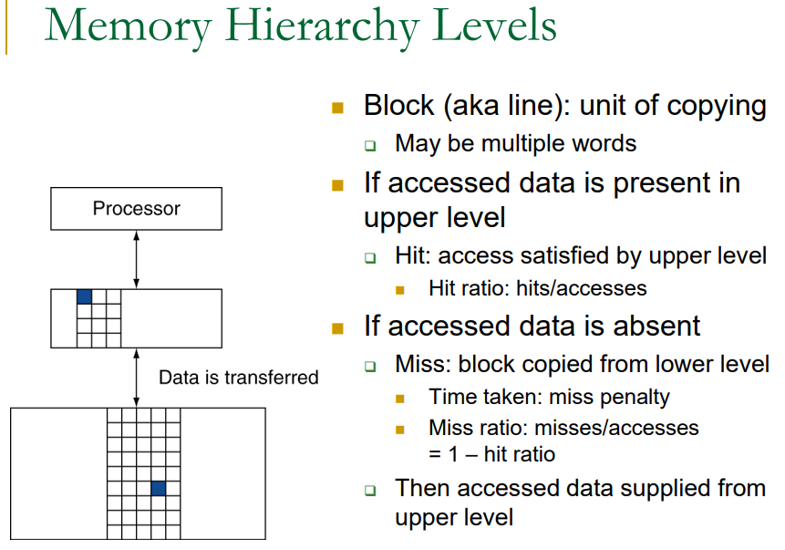
這張投影片在把「記憶體階層」的運作規則用三個核心名詞講清楚：block(line)、hit/miss、hit ratio/miss ratio/miss penalty。左邊的圖在畫：CPU 想要一小格資料，但階層搬運是「整塊搬」（一格變一塊），這就是利用空間局部性。
1) Block（又叫 line）是什麼？為什麼不是搬 1 個 byte？
投影片第一點：Block (aka line): unit of copying，May be multiple words
意思：在記憶體階層裡，上下層之間搬運資料的最小單位不是「單一位址的那個值」，而是一個 block（快取線 cache line），通常包含多個 word（甚至很多 byte）。
為什麼要整塊搬？
- 因為空間局部性：你用到某個位址，附近位址很可能很快也會用到
- 所以一次把附近一整段一起搬上來更划算
這也對應你前面那張 locality 投影片。
生活例子：
你去書櫃拿資料不會只撕下一個字帶回桌上，你會把整張講義拿回來（整塊搬），因為你很可能要看附近內容。
## 2) Hit / Miss 是什麼？
投影片兩段：
### Hit（命中）：access satisfied by upper level
意思：你要的資料已經在「上層」（比較快的那層，例如 cache）
所以這次存取不用去下層（RAM/disk），直接由上層完成。
### Miss（未命中）：block copied from lower level
意思：你要的資料不在上層
就必須去「下層」把包含它的那個 block 複製上來（copy up），再由上層提供給 CPU。
左圖的箭頭 “Data is transferred” 就是在畫 miss 的時候：從下層搬一整個 block 到上層。
## 3) Hit ratio / Miss ratio 怎麼算？
投影片寫：
* Hit ratio = hits / accesses
* Miss ratio = misses / accesses = 1 − hit ratio
白話：
* 你查 100 次，80 次在 cache 找到 → hit ratio = 0.8
* miss ratio = 0.2
這些比率直接決定效能，因為 miss 很貴。
## 4) Miss penalty（未命中懲罰）是什麼？
投影片：Time taken: miss penalty
意思：發生 miss 時，你要付出的額外時間成本（去下層拿資料 + 搬上來 + 可能還要替換掉舊 block）。
直覺：
* hit：幾乎立刻拿到
* miss：要等一段很長的時間（尤其 RAM vs cache、disk vs RAM 差距更大）
生活例子：
* hit：你要的筆就在手邊
* miss：你要走去另一個房間拿，回來才繼續寫 → 這段走路時間就是 miss penalty
## 5) 把整張投影片串成一個流程
- CPU 需要某地址資料
- 先查上層（cache）
- hit：直接回資料
- miss：到下層把「包含該地址」的 block 搬上來
- 搬上來後，再由上層回資料（投影片最後一句 Then accessed data supplied from upper level）
## 6) 用一張圖把流程畫出來（對齊投影片）
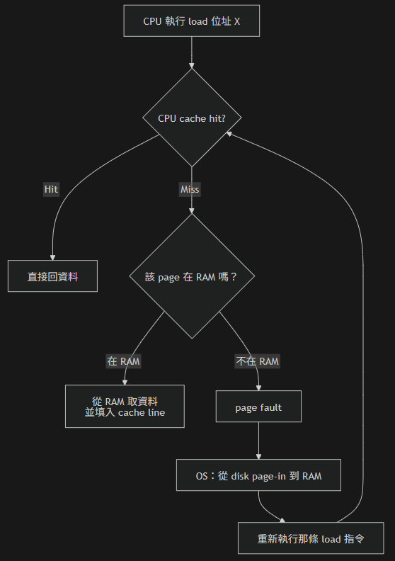
page fault：上圖裡面的(一種同步例外中斷 exception)是啥?
page fault（缺頁）是虛擬記憶體系統的一種例外（exception）：當 CPU 存取某個虛擬位址時，MMU 查頁表發現「這個頁面目前不在 RAM」或「權限不允許」，就會觸發 page fault，把控制權交給作業系統處理。
1) 什麼情況會 page fault
最常見兩類：
A. 合法但不在 RAM（Demand Paging）
頁面只是暫時不在主記憶體（可能在磁碟/SSD 的 swap 或檔案裡）。
OS 會把那頁從磁碟載入 RAM，更新頁表，然後讓程式「重跑」那條指令。
生活比喻：
你要用的講義不在桌上（RAM），在書櫃（disk）。你去拿回桌上後繼續寫。
B. 非法存取（Protection fault / invalid address）
例如越界、亂指標、寫到唯讀頁、存取不存在的位址。
OS 通常會終止程式（像你熟的 segmentation fault 類似結果）。
生活比喻：
你去翻別人的抽屜（權限不允許）→ 被制止/被趕出去。
2) page fault 發生時 OS 大致做什麼
以「合法但不在 RAM」為例：
- CPU 存取位址 → 觸發 page fault（陷入 kernel mode）
- OS 檢查這個位址是否合法、是哪個頁
- 找一個空的 page frame（不夠就先挑一頁趕出去，可能寫回磁碟）
- 從磁碟把需要的頁讀進 RAM（很慢）
- 更新頁表（present/valid bit、frame number 等）
- 讓那條指令重跑，這次就能從 RAM（再經 cache）拿到資料
Cache對軟體設計重要嗎?
這張投影片在回答標題那句：Cache 對軟體設計重要嗎？答案是重要，而且「重要的原因」主要來自 cache line（快取線）這個最小搬運單位。
1) cache line 是什麼？
cache line（快取線）是 CPU cache 裡「最小的快取/搬運單位」。
重點不是「CPU 一次只讀 1 個 byte」，而是：
- 你程式只讀某個位址的 1 個值
- CPU 其實會把「包含那個位址的一整塊資料」一起搬進 cache
那一整塊就是 cache line。
所以 cache 的命中/未命中，常常是以「整條 line」為單位在發生，不是以單一變數為單位。
## 2) 為什麼主流是 64 Bytes？
投影片說主流 CPU cache 的 cache line 多為 64B，意思是：硬體設計者認為 64B 在「空間局部性」與「搬運成本」之間常是很好的折衷：
* 太小：每次 miss 都只能拿到很少資料，空間局部性用不太起來
* 太大：每次 miss 要搬很多用不到的資料，浪費頻寬與 cache 空間
（投影片也提醒有例外，例如某些架構可能用 128B。）
## 3) 512 bytes 的快取例子在講什麼？
投影片的計算：512 / 64 = 8
意思是：
* 如果 L1 cache 總容量只有 512B（這是示意用的小數字）
* 每條 cache line 64B
* 那 L1 cache 最多同時只能放 8 條 line
這段要你建立「容量很小 → 會很容易被替換（evict）」的直覺：
你的資料若分散在很多不同 line，cache 很快就裝不下，命中率會掉，效能會差。
## 4) 為什麼這跟「軟體設計」有關？
因為你寫程式的資料存取順序，會直接影響：
* 你是不是會「用到同一條 cache line 裡的其他資料」（空間局部性）
* 你是不是會很快再次用到剛用過的 line（時間局部性）
* 你是不是把 cache 擠爆、一直替換（thrashing-like 的效果，但在 cache 層級）
換句話說：演算法同樣做 O(n²) 次運算，存取模式不同，跑起來可能差很多倍。
## 5) 投影片提到矩陣 row-wise vs column-wise 是在暗示什麼？
以 C/C++ 常見的 row-major（列主序）儲存為例：
* row-wise（逐列）存取：連續讀記憶體
→ 一次搬進來的 64B cache line 裡，接下來很快就會用到
→ 命中率高、快
* column-wise（逐行/逐欄）存取：每次跳很遠
→ 你剛搬進來的 line 裡大部分用不到
→ 常常 miss、慢
生活比喻：
* row-wise：你在看書，一行一行往下讀，翻頁也很順
* column-wise：你每讀一個字就跳到另一頁的某個角落，當然慢
## 6) 用一張小圖把「cache line 64B」對軟體的影響畫出來
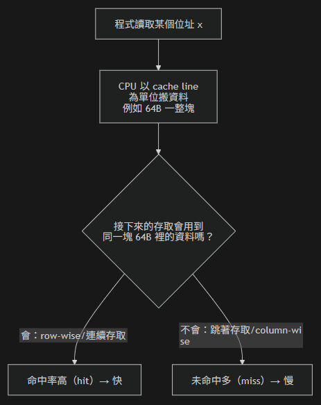
SRAM、DRAM 是啥
SRAM、DRAM 都是 RAM（Random Access Memory，隨機存取記憶體）的兩種實作技術，差別在「每個 bit 怎麼存」與「需不需要刷新（refresh）」；也因此影響速度、成本、容量與用途。
SRAM 是什麼
SRAM（Static Random Access Memory，靜態隨機存取記憶體）
- 存資料方式：用鎖存器/觸發器（flip-flop，通常 4~6 個電晶體）把 0/1 穩定地「鎖住」。(Encyclopedia Britannica)
- 需不需要 refresh：不需要，只要有供電就能維持資料。(Encyclopedia Britannica)
- 特性：非常快，但每 bit 需要較多電晶體 → 面積大、密度低、成本高。(Encyclopedia Britannica)
- 常見用途：CPU 的暫存器與快取（L1/L2/L3 cache）。(Encyclopedia Britannica)
生活比喻：SRAM 像你手上拿著的便條紙或工具，拿取最快，但你手能拿的東西很有限，也最貴重。
## DRAM 是什麼
DRAM（Dynamic Random Access Memory，動態隨機存取記憶體）
- 存資料方式：用「電容（capacitor）」儲存電荷代表 0/1，配合電晶體當開關（常見 1T1C：1 transistor + 1 capacitor）。(維基百科)
- 需不需要 refresh：需要，因為電容會漏電，電荷會衰減；必須週期性刷新以保持資料。(維基百科)
- 特性：比 SRAM 慢，但每 bit 結構更簡單 → 密度高、容量能做很大、成本較低。(維基百科)
- 常見用途：主記憶體（你電腦插的 RAM 模組：DDR4/DDR5 都屬於 DRAM 家族）。(維基百科)
生活比喻：DRAM 像你的桌面，放得下很多資料、拿也算快，但還是比「直接拿在手上」慢。
## SRAM vs DRAM 一眼比較表
| 項目 | SRAM | DRAM |
|---|---|---|
| 存資料原理 | flip-flop（多電晶體）(Encyclopedia Britannica) | 電容 + 電晶體（1T1C 常見）(維基百科) |
| refresh | 不需要(TechTarget) | 需要(維基百科) |
| 速度 | 較快(Encyclopedia Britannica) | 較慢(Encyclopedia Britannica) |
| 成本/密度 | 貴、密度低(Encyclopedia Britannica) | 便宜、密度高(維基百科) |
| 常見用途 | CPU cache/暫存器(Encyclopedia Britannica) | 主記憶體（RAM）(Encyclopedia Britannica) |
2/19作業
- 誰負責搬動主記憶體的資料到cache? 誰負責搬動磁碟的資料到ssd? 誰負責搬動ssd的資料到主記憶體?
- 快取的替換策略(replace)有哪些?
- 將最新的SRAM、DRAM速度跟價格用列表比較。
- 甚麼是CISC、RISC?
- 甚麼是Temporal locality、Spatial locality，請用程式舉例。
- L1、L2、L3 cache有甚麼差異?
- 目前的科技的cache line 一次讀的大小是多少?
- 現在主流的cache line大小是多少?
- 計算row-wise、column-wise的效能差異。請附程式碼和比較結果。
I/O 結構
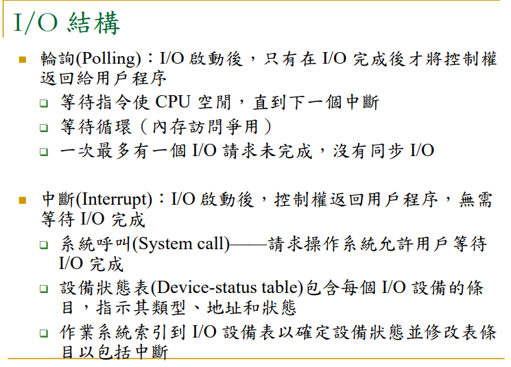
1) I/O\<輸入/輸出>就是電腦和外部裝置交換資料，例如：
鍵盤輸入
螢幕輸出
SSD 讀檔
網卡收封包
印表機列印
在系統裡，CPU 通常不是直接跟裝置本體講話，而是透過設備控制器\<device controller，裝置控制硬體>來下命令、查狀態、收通知。你們前面那頁也有寫：每個設備控制器負責特定類型的設備，而且有自己的本地緩衝區\<local buffer，本地暫存區>，完成後會用中斷通知 CPU。
2) 輪詢 Polling 是什麼
I/O 啟動後，只有在 I/O 完成後才把控制權回給用戶程式(CPU)
CPU 會一直等、一直查
一次最多只有一個 I/O 請求在等，沒有同步 I/O
3) 中斷 Interrupt 是什麼
I/O 啟動後，控制權先回給用戶程式(CPU)
不用等 I/O 完成
完成時再透過中斷處理(通之CPU)
Direct Memory Access (DMA)
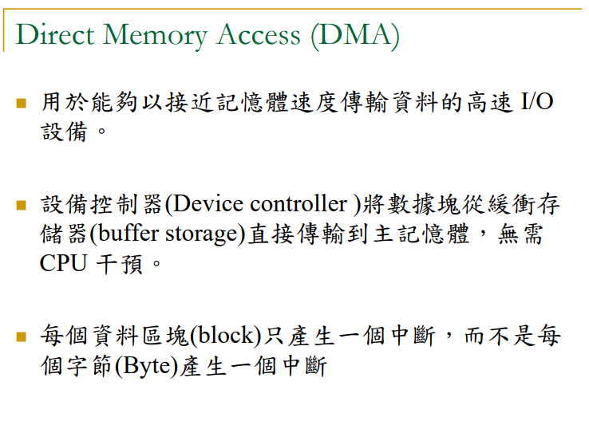
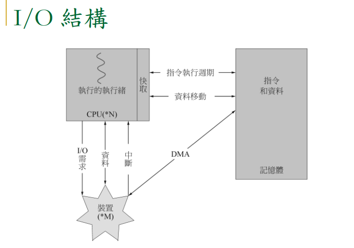
DMA是啥?
搬資料這種事情不用自己(CPU)做，叫工人(DMA)做就好
這裡的「緩衝存儲器 buffer storage」是什麼
就是裝置控制器附近的暫存區/local buffer。
資料通常會先到控制器的 buffer，再整塊搬到 RAM。
每個資料區塊只產生一個中斷，而不是每個字節產生一個中斷
沒有 DMA 時
如果用很原始的方法，可能會變成：
裝置送來一點資料
CPU 處理一次
再送一點
CPU 再處理一次
如果每個 byte 都中斷一次，CPU 會被中斷打爆。
有 DMA 時
做法變成：
一整個 block（例如 4KB、64KB、甚至更大）先搬完
搬完後只通知 CPU 一次
這樣 CPU 壓力小很多。(反正同時間做很多事情)
這也是 DMA 經典優勢：減少 interrupt overhead（中斷開銷）。
DMA 小整理
1. DMA 是一種方式？還是裝置？
DMA（Direct Memory Access，直接記憶體存取）是一種資料傳輸方式/機制，不是裝置本身。
它的重點是：繞過 CPU 的逐筆介入，讓資料能直接在裝置和主記憶體（RAM）之間傳輸。Microsoft 直接把 DMA 定義成一種 data transfer strategy。Microsoft Learn+1
2. 誰在操控 DMA？
CPU / 作業系統 / 驅動程式負責「設定」DMA，DMA 控制器或裝置控制器負責「執行」DMA。
更精準拆開：
-
OS / driver / CPU
-
設定來源位址、目的位址、長度、方向
-
啟動 DMA 傳輸
-
DMA controller / DMA engine / device controller
-
真的去搬資料
-
傳輸完成後通知 CPU
Microsoft 也寫得很清楚：driver 可以使用 DMA controller 直接傳輸資料。Microsoft Learn+1
3. DMA 執行時是誰在運作？（要寫出 bus 的角色和功能）
DMA 執行時，真正正在運作的是 DMA 控制器（或具 DMA 能力的裝置控制器）與主記憶體；
而 bus（匯流排）扮演的是資料傳輸通道/道路的角色。
bus 的角色
bus 是 CPU、RAM、裝置之間共用的通道，用來傳送：
-
位址（資料要放哪、從哪拿）
-
資料
-
控制訊號（讀/寫、開始/完成等）
DMA 執行時 bus 的功能
DMA 要搬資料，必須透過 bus把資料在：
- 裝置控制器 ↔ RAM
之間傳輸。
如果裝置支援 bus mastering，它可以暫時取得 bus 的控制權，自己直接對記憶體發起 DMA 傳輸，而不用 CPU 一筆一筆代勞。維基百科+1
一句話總結
-
DMA：搬資料的方法
-
DMA controller / device controller：搬資料的硬體執行者
-
bus：搬資料必經的道路與訊號通道
很短版（考前背誦）
-
DMA 不是裝置，是直接記憶體存取的資料傳輸機制。Microsoft Learn
-
CPU/OS/driver 負責設定與啟動 DMA；DMA controller 或裝置控制器負責真正搬資料。Microsoft Learn+1
-
DMA 傳輸時，資料是透過 bus（匯流排） 在裝置和 RAM 間移動；bus 負責承載位址、資料與控制訊號。支援 bus mastering 的裝置可直接取得 bus 控制權來做 DMA。維基百科+1
詳細一點的白話版
你可以把它想成：
-
CPU：主管
-
DMA：搬貨規則
-
DMA 控制器：搬運工
-
bus：道路
-
RAM：倉庫
-
裝置：貨車
流程就是：
-
主管（CPU）說「把這批貨搬去倉庫哪個位置」
-
搬運工（DMA controller）開始做事
-
走道路（bus）把貨送到倉庫（RAM）
-
搬完再通知主管
電腦系統架構
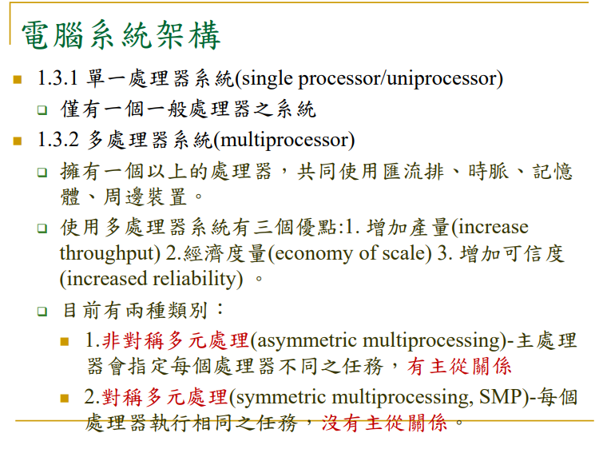
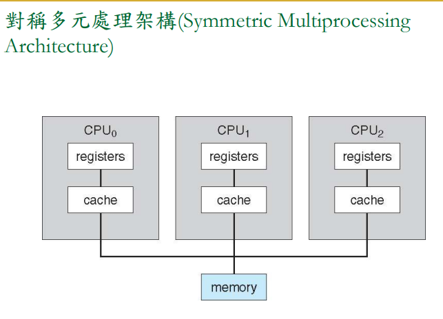
1) 什麼是單一處理器系統
投影片寫：
僅有一個一般處理器之系統
chapter 1_20240218
白話就是：
整台電腦只有一顆主要 CPU 在做一般工作。
雖然可能還有別的控制晶片、I/O 控制器、GPU、DMA 之類的硬體，但真正負責一般程式執行的「通用處理器」只有一個。
生活例子
像一間店只有一個店員：
-
所有結帳
-
補貨
-
接電話
-
回客人問題
都由同一個人輪流做。
要注意的一點
單一處理器 不代表同時只能做一件事。
OS 仍然可以靠排程讓很多行程輪流跑，造成「看起來像同時」的效果，這叫 concurrency\<並行推進>，但不是多顆 CPU 真正同時做。你們多執行緒投影片也提到：
-
單一 processor / core 也能靠 scheduler 支援 concurrency
-
真正同時做多件事才叫 parallelism
chapter 4_20240401
2) 什麼是多處理器系統
投影片寫：
擁有一個以上的處理器，共同使用匯流排、時脈、記憶體、周邊裝置。
白話就是：
一台系統裡有多個 CPU（或多個核心視為多個處理單元），這些處理器一起工作，而且共享系統資源。
常見共享資源：
-
匯流排
-
記憶體
-
周邊裝置\<I/O devices>
-
時脈/同步機制
這和一般 SMP 定義一致：多個處理器連到共享主記憶體與 I/O，由同一個 OS 管理。
3) 多處理器系統三個優點
投影片列了三個：
-
增加產量
同時間作更多事 -
經濟度量
例如 4 顆處理器如果能共享：
- 同一套主記憶體系統
- 同一套 I/O 裝置
- 同一塊主機板/機箱/電源/散熱
- 同一個 OS
那通常比你買 4 台獨立電腦來得更省成本。
- 增加可信度
如果某顆處理器壞掉，整個系統不一定立刻完全停擺。
4) 多處理器系統有兩種主要類型
投影片說有兩類：
-
非對稱多元處理\<asymmetric multiprocessing, AMP>
-
對稱多元處理\<symmetric multiprocessing, SMP>
4.1)非對稱多元處理 AMP 是什麼
投影片寫：
主處理器會指定每個處理器不同之任務，有主從關係。
白話就是：
系統裡不是每顆處理器都平等。
有一顆是 主處理器\<master processor>，它負責分配工作；其他處理器像 從處理器\<slave/subordinate processors>，照主處理器指派去做事。
核心特徵
- 有主從關係
- 工作分配由 master 決定
- 某些工作可能只允許 master 做
- 設計較簡單
你們 chapter 6 排班也講得更具體：
- AMP 裡由一個處理器負責所有排班決定、I/O 處理
- 其它處理器只負責執行使用者程式碼
- 因為只有一個處理器存取系統資料，所以減少資料共享需求，設計較簡單
這和標準教學說法一致：AMP 中 CPU 不平等，主 CPU 掌控整體。
生活例子
像一個工地：
- 工頭（master）負責分派工作
- 工人 A 搬磚
- 工人 B 配線
- 工人 C 上漆
工頭自己決定誰做什麼，大家不是平等分工。
4.2) 對稱多元處理 SMP 是什麼
投影片寫：
每個處理器執行相同之任務，沒有主從關係。
這句話更精準應該理解成：
每個處理器地位相同，都能執行 OS/使用者程式，不需要固定主從角色。
不是說「每顆 CPU 永遠做一模一樣的工作」，而是說：
-
它們權限相同
-
任何處理器都可以接手工作
-
沒有哪一顆天生是老大
你們 chapter 6 也補充得很完整：
-
在 SMP 中，每個處理器自行排班
-
行程可能來自共同 ready queue，或每個處理器自己的 private queue
-
各處理器會自己選一個行程來跑
這也符合標準 SMP 定義：多個 identical processors 平等共享記憶體與 I/O，由單一 OS 平等看待。
生活例子
像 4 個能力差不多的櫃台人員：
-
沒有「總櫃台只負責分派、其他人只能做單一工作」
-
每個人都能接待客人、結帳、回答問題
哪個櫃台有空就處理哪位客人。
4.3) SMP 為什麼比較複雜
這也是老師後面會一直講的東西。
當多顆處理器都可以平等地存取：
-
同一塊記憶體
-
同一組 kernel data structure
-
同一個 ready queue
-
同一個 I/O 子系統
就會出現很多問題：
-
誰先拿到資料？
-
會不會搶同一個 lock？
-
負載怎麼平均？
-
行程要不要固定在同一核心上跑？
你們 chapter 6 就開始講這些了，例如：
- processor affinity\<處理器親和性>：盡量讓行程留在同一處理器上，以減少 cache miss、提升 locality
chapter 6_20240505
- load balancing\<負載平衡>：在 SMP 裡讓每顆處理器工作量儘量平均
chapter 6_20240505
這代表 SMP 雖然強大，但 OS 設計會複雜很多。
集成式系統(clustered system)
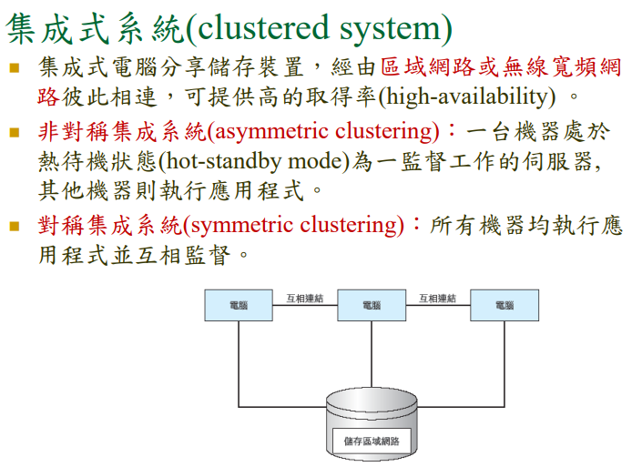
集成式系統是啥
集成式系統（clustered system）是多台電腦透過網路連接、通常共享儲存裝置，一起提供服務的系統。
非對稱式：平常一台工作，另一台待命；工作中的那台壞掉時，由待命那台接手。
對稱式：多台平常一起工作並互相監督；若其中一台壞掉，其餘機器接手它的工作。
網路是啥意思
這裡的”網路”，意思是"互相可以傳輸資料"，不管是無線網路還是有線網路還是傳輸線。然後要有以下功能：
節點彼此能傳資料
能做 heartbeat（互相確認還活著）
能做 故障切換 failover
能共享狀態與協調工作
作業系統架構
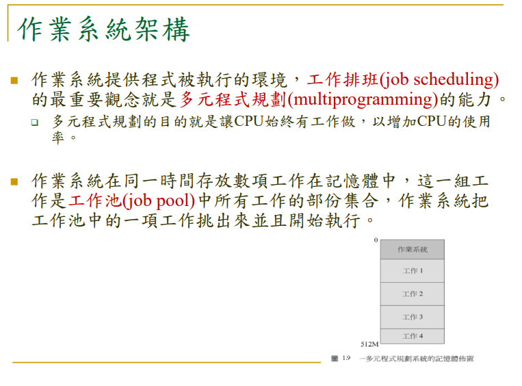
大意
OS 會先把好幾個工作放進記憶體，然後在適當時機挑一個來用 CPU 執行；這樣某個工作如果卡在 I/O，CPU 還能改去做別的工作。
把多個工作同時保留在主記憶體中，只要某一個工作因 I/O 等待而停住，就切去執行另一個工作，目的就是提高 CPU utilization。
2) 什麼是 job scheduling（工作排班）
投影片第一句說：
工作排班(job scheduling)的最重要觀念就是多元程式規劃(multiprogramming)的能力。
白話意思
job scheduling 就是：
當系統裡有很多工作時，OS 要決定現在先讓誰跑。
你可以想成：
-
記憶體裡已經有好幾個工作
-
CPU 一次只能專心跑一個
-
所以 OS 必須排班：選一個目前最適合的工作
3) 什麼是 multiprogramming（多元程式規劃）
投影片第二句說：
多元程式規劃的目的就是讓 CPU 始終有工作做，以增加 CPU 的使用率。
這句是本頁最重要的核心。
白話解釋
CPU 非常快，I/O 很慢。
如果系統一次只載入一個工作，這個工作一旦在等 I/O，CPU 就會閒著。
所以 OS 乾脆：
-
一次把多個工作放進主記憶體
-
某個工作一等 I/O，就先切去做別的工作
這就是 multiprogramming。
這和公開教材的標準定義一致：
Multiprogramming 是把多個 jobs 保存在 main memory 中，只要其中一個因 I/O 阻塞，CPU 就分配給其它 jobs，目標是讓 CPU 永遠保持忙碌。
4) 為什麼要這樣做？因為 CPU 很怕閒著
投影片說「讓 CPU 始終有工作做」，這句話其實就是在追求：
- CPU utilization\<CPU 使用率>
CPU 使用率高，代表系統比較有效率。
低使用率通常代表 CPU 常常在等 I/O、等資料、等事件。
生活例子
想像一個廚師（CPU）只有一份工作：
-
煮麵 10 秒
-
然後等水滾 2 分鐘
-
這 2 分鐘都沒事做
如果廚房同時有很多單：
-
等水滾時去切菜
-
等烤箱時去煎蛋
-
等送餐時去備料
廚師就幾乎不會閒著。
這就是 multiprogramming 的精神。
5) 什麼是工作池 job pool
投影片第二段說：
作業系統在同一時間存放數項工作在記憶體中，這一組工作是工作池(job pool)中所有工作的部份集合，作業系統把工作池中的一項工作挑出來並且開始執行。
白話意思
job pool\<工作池> 可以想成：
系統裡所有「等待被執行」的工作的大集合。
但不是工作池裡所有工作都同時在 RAM 裡。
通常是：
-
job pool：所有待執行工作的總集合
-
記憶體裡：job pool 的一部分
-
CPU：每次從記憶體裡挑一個來跑
Wikipedia 也把 job queue / job pool 類似地描述成由排班器維護、包含待執行 jobs 的資料結構。(wikipedia.org)
作業系統的操作
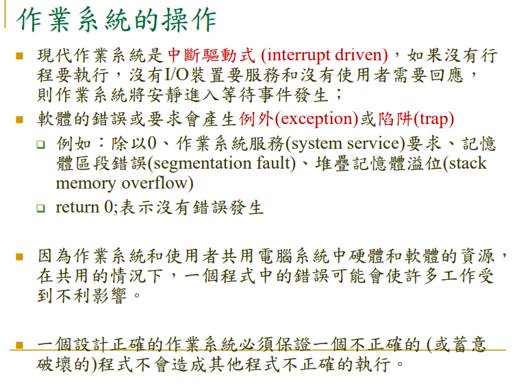
這張投影片其實在講一個很核心的觀念：
作業系統平常不是一直忙著「主動巡邏」每件事，而是大多數時間在等事件；一有事件，就被喚醒來處理。 這就是 interrupt driven（中斷驅動式） 的意思。課本原文也直接這樣寫：現代 OS 是中斷驅動式；軟體錯誤或服務要求會產生 exception / trap；而設計良好的 OS 必須保護其他程式不被錯誤程式拖垮。
1) 現代作業系統是中斷驅動式 (interrupt driven) 是什麼意思？
你可以把 OS 想成一個總機櫃台：
- 平常沒有電話，就先待命。
- 有電話打來，才開始處理。
- 處理完，再回去待命或繼續安排工作。
在電腦裡，這個「電話打來」就是各種事件(event)：
- I/O 完成，例如磁碟讀完、鍵盤輸入到了
- 程式主動要求 OS 幫忙
- 程式做錯事，例如非法存取記憶體
所以 interrupt driven 的重點不是「OS 一直自己跑很多事」，而是：
OS 主要是被事件喚醒，接手控制權，處理後再把控制權還回去。 教材在前面幾張也提到：裝置控制器完成 I/O 後，會透過 interrupt（中斷） 通知 CPU；而 trap 則可由錯誤或 system call 觸發。
生活例子：
- 不是店員每 0.1 秒去看門口有沒有人，而是門鈴響了才去開門
- 不是你每秒檢查下載有沒有完成，而是系統通知你下載完成
這樣做的好處是：省 CPU，不用一直做無意義輪詢。這也是為什麼「如果沒有行程要執行、沒有 I/O 要服務、沒有使用者要回應」，OS 就會進入等待狀態。
2) exception（例外）和 trap（陷阱）是什麼？
這裡先講一個很重要的點：
這兩個名詞在不同架構、不同教材、不同社群文章裡，定義不一定完全一樣。 社群上常有人被這件事搞混；Intel 官方手冊則把 exceptions 再細分成 faults / traps / aborts。所以你這張投影片把它們並列，是一種教學上的簡化寫法。(Stack Overflow)
先用這門課最容易懂的方式記：
-
interrupt（中斷）：多半是外部硬體事件
-
例如磁碟讀好了、鍵盤按下了
-
exception（例外）：程式執行指令時發現問題
-
例如除以 0、非法位址
-
trap（陷阱）：常拿來指刻意觸發 OS 服務的同步事件
-
例如 system call（系統呼叫）
在 x86 / Intel 的正式分類裡，trap 是 exception 的一種；而在很多 OS 課堂上，老師會把 trap 當成「由軟體主動要求 OS 服務」那一類事件來講。(Intel)
所以你這張投影片可以先這樣理解：
不管叫 exception 還是 trap，本質上都是「讓 CPU 暫停原本的使用者程式，轉去讓 OS 接手處理」的機制。
3) 投影片中的例子，要怎麼理解？
(a) 除以 0
這是最典型的 exception（例外）。
例如：
int x = 10 / 0;
程式跑到這一行，CPU/OS 會發現這是非法或異常狀況，於是把控制權轉給錯誤處理流程。Intel 的例外表裡也把 Divide Error 列為預定義例外之一。(Intel)
(b) 作業系統服務要求 (system service request)
這個其實就是：
使用者程式想做某些自己不能直接做的事，所以請 OS 幫忙。
例如：
- 開檔
- 建立行程
- 配置記憶體
- 寫資料到螢幕或磁碟
因為使用者程式在 user mode（使用者模式），很多敏感操作不能自己直接做，所以要透過 system call（系統呼叫） 進入核心。教材第 2 章也明講：system call 是使用 OS 服務的介面，而且是透過軟體中斷/陷阱類機制切進去。
你可以把它想成：
- 使用者程式 = 一般民眾
- OS kernel（核心） = 戶政事務所櫃台
- system call = 抽號碼牌正式申請
不是你想碰戶籍資料庫就自己進去碰，而是依法透過櫃台申請。
© segmentation fault（記憶體區段錯誤）
這個很常見，通常代表：
程式碰了不該碰的記憶體位址。
例如：
- 解參考野指標
- 寫到不屬於自己的記憶體
- 寫到只讀區域
範例：
c
#include
發生了什麼？
p 根本沒有指到一塊你可用的記憶體，但你卻硬要寫進去。
這就像：
-
你手上有一把「房間鑰匙」
-
但那把鑰匙其實根本沒有對應任何房間
-
你還硬要開門進去
結果就是：非法記憶體存取（invalid memory access）。
(d) stack memory overflow（堆疊溢位）（記憶體爆掉）
這通常是：
- 遞迴太深
- 區域變數開太大
- 執行緒 stack 太小
教材第 3 章也有補充：stack overflow 常見原因是函式呼叫過多或區域變數太多。
例子 A：無限遞迴（infinite recursion）
c
#include
void f(int n) {
printf("n = %d\n", n);
f(n + 1); // 一直呼叫自己，永不停止
}
int main() {
f(1);
return 0;
}
發生了什麼？
每呼叫一次 f()，stack 都要多放一層東西，例如：
-
return address（返回位址）
-
parameter（參數）
-
local variables（區域變數）
但 stack 空間不是無限的。
呼叫太深之後，stack 就爆掉了，這就是 stack overflow。教材也正是這樣描述：過多的函式呼叫，例如遞迴太深。
而在 Linux，如果標準 stack 耗盡，核心會送出 SIGSEGV。man7 的 sigaltstack(2) 也直接寫到這點。
所以你在終端常看到的不是：
stack overflow
而是：
Segmentation fault (core dumped)
例子 B：區域陣列開太大
c
#include
void f() {
int a[100000000]; // 很大的區域陣列，放在 stack
a[0] = 1;
printf("%d\n", a[0]);
}
int main() {
f();
return 0;
}
發生了什麼？
這個陣列是 local array（區域陣列），通常放在 stack。
如果太大，就會瞬間把 stack 空間吃光，造成 stack overflow。
教材也有說，區域變數使用太多是 stack overflow 常見原因之一。
stack 是啥？
stack 是程式在「呼叫函式」時，拿來暫時放工作資料的一塊記憶體區域。
這些資料通常包含 local variables（區域變數）、function parameters（函式參數）、return address（返回位址）。
就是用來存區域變數(大括號內的，不是全域變數)的。
4) 「return 0; 表示沒有錯誤發生」這句要怎麼精準理解？
這句話方向上大致對，但不夠精準。你要改成下面這個版本會更對：
return 0; 表示程式以成功狀態結束（successful termination / exit status 0）。
也就是說，這是在講：
main()回傳值- shell / parent process 看到的 exit status（結束狀態）
POSIX man page 和 GNU C 文件都說得很清楚：main 回傳的值會成為 process 的 exit status，而 0 慣例上代表成功。(man7.org)
為什麼我說投影片這句不夠精準？
因為：
return 0; 不代表「程式裡完全沒 bug」；它只代表「程式最後回報成功」。
例如這種程式：
c
int main() {
printf("中間其實做錯一些邏輯\n");
return 0;
}
它還是回傳成功。 所以比較精確的說法不是「沒有錯誤發生」，而是：
- 程式認為自己成功結束
- 它對外回報的結束碼是 0
這個差別在考試或寫程式時很重要。
5) 為什麼一個程式錯了，可能影響很多工作？
因為所有程式都在共享同一台電腦的資源：
- CPU
- 記憶體
- 檔案
- I/O 裝置
如果沒有保護機制，一個程式亂寫記憶體，就可能把別人的資料蓋掉；一個程式陷入無窮迴圈，也可能霸佔 CPU。教材這張投影片就是在提醒你：OS 不是只有幫忙做事，還負責防呆與隔離。
這也就是下一層觀念：
為什麼 OS 要有 protection（保護）？
因為 OS 必須保證：
- 壞掉的程式不會搞壞別的程式
- 惡意程式不能隨便碰核心或別人的記憶體
這跟後面的 dual mode operation（使用者模式 / 核心模式） 直接相關。教材下一張就接到 user mode / kernel mode，這不是巧合，而是同一條邏輯線。
作業系統的操作(cont.)(cont.是continued，繼續上一章的意思)
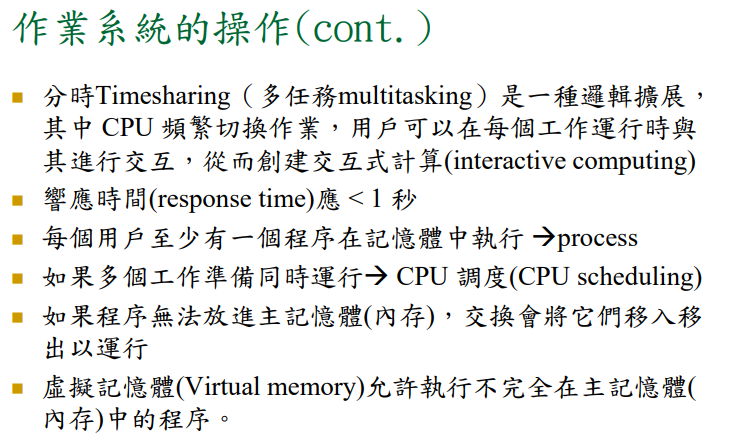
這張投影片在講的是：
作業系統為了讓很多人、很多程式「看起來像同時在跑」，會把 CPU 很快地輪流分給各個工作。 這種做法叫 time-sharing（分時），也是 multitasking（多工 / 多任務） 的核心概念之一。教材直接寫到：CPU 會頻繁切換作業，讓使用者能在工作執行時互動，形成 interactive computing（互動式計算）；若多個工作同時準備執行，就需要 CPU scheduling（CPU 排程）；若程式放不進主記憶體，就會涉及 swapping（交換）；而 virtual memory（虛擬記憶體） 允許程式不必完整待在主記憶體中也能執行。
1) time-sharing（分時）到底是什麼？
你可以先把它想成：
一位老師同時回答很多同學的問題，但不是一次回答完一個人才換下一個，而是每個人都先回一點點，再快速切去下一位。
教材原文就是這個意思： CPU 會頻繁切換不同工作，讓使用者在自己的工作執行時仍能互動。 IBM 對 time-sharing 的歷史說明也很一致：它讓多個使用者共享同一台電腦，同時又讓每個人感覺自己像是獨占這台機器。(IBM)
所以注意一個容易搞混的點：
- 不是真的所有程式在單核心 CPU 上「物理上同時執行」
- 而是 切換夠快，所以我們感覺像同時
這也是教材在 Chapter 3 裡說的：單一處理器系統不可能同時真的跑多個 process，time sharing 是靠 CPU 在不同行程間不斷切換來達成互動感。
2) 為什麼它又寫 multitasking（多任務）？
這裡可以先這樣理解：
- multitasking（多任務）：系統能處理多個工作
- time-sharing（分時）：達成多任務、而且讓互動體驗變好的方法
也就是說，這張投影片把兩個很接近的概念放在一起講。 IBM 的描述偏向「很多人共享同一台電腦」；教材這邊則把它延伸成「CPU 快速輪轉很多工作，讓互動式使用成為可能」。(IBM)
你可以把它記成：
multitasking 是現象，time-sharing 是達成這個現象的典型方式。
3) 「response time（回應時間）應 \< 1 秒」怎麼理解？
這句你要小心，不要把它背成死規則。
教材寫的是：response time 應小於 1 秒。 這比較像是 interactive system（互動式系統） 的經驗法則，意思是：
使用者發出要求後，最好很快看到第一個反應，這樣才會覺得系統是「活的」、「正在回應我」。
例如你按一個按鈕，過了 1.5 秒畫面才有反應。
這時候你通常會開始懷疑：
-
我到底有沒有按到？
-
系統是不是卡住？
-
要不要再按一次？
這就是 互動感下降。
Chapter 5 也有更正式定義： response time 是從提出要求到第一個反應出現的時間，不是整個工作全部做完的時間。
所以：
- 你按一下按鈕，畫面 0.2 秒內有轉圈圈或先跳出視窗 → 這叫回應快
- 真正檔案處理可能還要 5 秒 → 但使用者不一定覺得慢，因為系統有先回應
這跟 turnaround time（周轉時間 / 完成時間） 不一樣。 很多同學會把這兩個混在一起。
4) 「每個使用者至少有一個程式在記憶體中執行 → process」是什麼意思？
這句是在鋪陳 process（行程） 的概念。
你可以把 program（程式） 跟 process（行程） 這樣分：
- program：靜態的程式檔
- process：程式被載入後，正在執行中的那個實體
教材在 Chapter 3 說，time-sharing 的目標就是讓 CPU 在不同行程之間切換，讓使用者能和自己的行程互動；而排程器會從可用行程中挑一個給 CPU。
所以投影片那句話的白話版就是：
每個使用者至少會有一個「正在系統裡活著、等著被排程」的工作單位，這個單位就叫 process。
5) 「如果多個工作準備同時運行 → CPU scheduling」是什麼？
因為 CPU 數量有限，但想跑的 process 很多，所以 OS 必須決定：
- 先給誰跑？
- 跑多久？
- 何時切走？
- 下一個換誰？
這就是 CPU scheduling（CPU 排程）。教材在 Chapter 3 與 Chapter 5 都明講，當多個 process 可執行時，scheduler 會選下一個 process，把 CPU 分配給它。
而且你這張投影片後面其實會一路接到 Round Robin（RR，依序循環排班）。 教材第 5 章也寫得很清楚：RR 特別適合分時系統，會給每個 process 一個 time quantum（時間片），時間到了就先切走，放回 ready queue 尾端。典型 quantum 大約是 10–100 ms，這樣通常能兼顧互動回應與 context switch 成本。
社群討論也常講同一件事：RR 的設計目標之一就是改善 interactive response，但 quantum 太小會讓切換成本變高。(Stack Overflow)
6) 「程式放不進主記憶體，就交換移入移出」是什麼？(投影片寫”移入移出”怪怪的，應該寫”移出再移入”)
這裡的 swapping（交換） 可以先粗略理解成：
RAM 不夠大時，先把暫時不用的 process 搬出去，等需要時再搬回來。
教材在這張投影片先丟出概念，後面 Chapter 8 會更正式展開。
生活例子：
- 你的書桌（RAM）放不下全部教科書
- 暫時不用的書先放回書架（磁碟）
- 要用哪一本，再拿回桌上
例如：
-
RAM 已經放了 Process A、B
-
現在 Process C 也想跑，但 RAM 滿了
-
OS 先把 A 移出到磁碟
-
把 C 移入到 RAM 執行
-
之後如果 A 又要跑，再把 A 搬回來
但要注意，我要糾正一個常見誤解：
swapping 不是現代系統最主要的日常機制。
在現代 OS，更多時候是用 virtual memory + paging（虛擬記憶體 + 分頁） 來處理，而不是整個 process 大搬家。這張投影片先用教學上的大圖景介紹，後面才會細分。教材的 Chapter 8、9 就是往這裡展開。
7) virtual memory（虛擬記憶體）這句最重要的是什麼？
投影片最後一句是全張最關鍵的升級版：
程式不必整個都在主記憶體裡，仍然可以執行。
這就是 virtual memory（虛擬記憶體） 的核心味道。
白話版：
- 程式以為自己有一大塊連續、好用的記憶體
- 但實際上，OS 只把目前需要的部分放進 RAM
- 其他部分可以先留在磁碟，等真的用到再載入
教材 Chapter 9 就是專門在講這一套。
所以你可以把 swapping 和 virtual memory 先這樣分：
- swapping：比較像「整包搬進搬出」
- virtual memory：比較像「只搬現在需要的那幾頁」
這樣理解對初學者最穩。
8) 整張投影片其實在回答哪個問題？
它其實在回答這個超核心的問題：
只有一顆 CPU、有限的 RAM，為什麼我們還能同時開很多程式，而且覺得電腦有在即時回應？
答案就是這四步：
- CPU 快速輪流服務各個 process → time-sharing
- OS 決定先服務誰 → CPU scheduling
- RAM 放不下時先搬來搬去 → swapping
- 甚至不必整個程式都放進 RAM → virtual memory
雙模式運作(Dual mode operation)
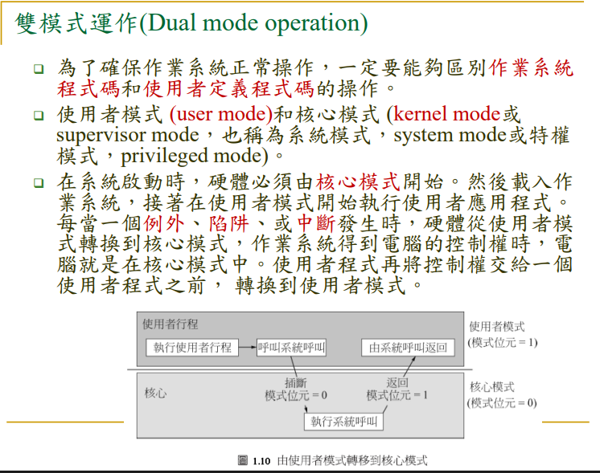
這張圖其實在回答的核心問題是：
「為什麼使用者程式不能直接碰硬體、不能直接做所有事，而一定要透過作業系統？」
答案就是：因為電腦必須用「雙模式運作」(Dual-mode operation) 來保護系統。 作業系統會把 CPU 的執行狀態分成 使用者模式 (user mode) 和 核心模式 (kernel mode)，藉此限制一般程式的權限，避免它亂動到整台機器。這也是課本在講的保護機制核心。投影片也明確寫到，系統啟動時先進入核心模式，之後執行使用者應用程式時切到使用者模式；每當發生例外、陷阱或中斷時，再切回核心模式。 (codex.cs.yale.edu)
先用一句話抓住整張圖
你可以把它想成：
- 使用者模式：像一般民眾，只能做被允許的事
- 核心模式：像政府或管理員，有最高權限，可以碰硬體、改系統設定、處理中斷
asm
一般應用程式平常都跑在 user mode。 只有在它需要作業系統幫忙時，才會透過 system call（系統呼叫） 進到 kernel mode。 處理完後，再回到 user mode 繼續跑。 (cseweb.ucsd.edu)
為什麼一定要分兩種模式？
因為如果不分，任何程式都能：
- 直接存取所有記憶體
- 直接控制硬碟、鍵盤、網卡
- 關掉中斷
- 改 CPU 的保護設定
- 破壞其他程式甚至把整個系統弄掛
所以 CPU 會用一個 mode bit（模式位元） 或類似的硬體狀態，表示「現在是 user mode 還是 kernel mode」。 在 user mode 下，某些 privileged instructions（特權指令） 根本不能執行；如果硬要執行，就會觸發 trap/exception，交給 OS 處理。 (cseweb.ucsd.edu)
圖上的流程在畫什麼？
圖中其實是在畫這條路：
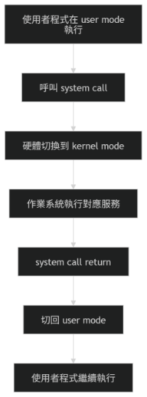
asm
這和很多作業系統課程講的標準流程一致： system call / exception / interrupt 會讓控制權從使用者空間轉到核心；處理完後，再 return 回原本的使用者程式。(eng.utah.edu)
一行一行拆這張投影片
1. 「為了確保作業系統正常操作，一定要能夠區別作業系統程式碼和使用者定義程式碼的操作」
意思是：
OS 必須知道現在是誰在執行。 如果是使用者自己寫的程式，就不能給它太多權限。 如果是 OS 核心在執行，才可以做高權限工作。
2. 「使用者模式 (user mode) 和核心模式 (kernel mode)」
這兩個就是 CPU 的兩種權限等級。
使用者模式 user mode
能做：
- 一般運算
- 呼叫函式
- 存取自己的合法記憶體
- 發出 system call 請 OS 幫忙
不能做：
- 直接執行 I/O 特權操作
- 直接改頁表、記憶體保護
- 直接關中斷
- 任意讀寫核心記憶體
核心模式 kernel mode
可以做：
- 執行特權指令
- 控制裝置
- 管理記憶體
- 處理中斷
- 排程程序/執行緒
這正是 dual-mode operation 的目的：保護 OS 與其他程式。 (codex.cs.yale.edu)
3. 「系統啟動時，硬體必須由核心模式開始」
這句很重要。
開機時還沒有使用者程式，必須先讓 OS 有最高權限去：
- 初始化 CPU
- 初始化記憶體
- 初始化裝置控制器
- 載入核心
- 建立保護機制
所以開機一定先在 kernel mode。之後 OS 準備好，才把 CPU 切到 user mode 去跑一般程式。 (codex.cs.yale.edu)
4. 「每當一個例外、陷阱、或中斷發生時，硬體從使用者模式轉換到核心模式」
這句是在說：什麼情況會切模式？
主要三種：
A. system call（系統呼叫）
使用者程式主動要求 OS 幫忙。 例如：
read()write()open()fork()
這通常是 同步的，因為是程式自己執行到這裡才發生。很多教材把這種切換稱為 trap。 (cseweb.ucsd.edu)
B. exception（例外）
程式做了不合法或特殊情況的事。 例如：
- 除以 0
- 存取非法記憶體
- 執行特權指令
- page fault（缺頁）
這也是同步的，因為和當前指令直接相關。(ee.usc.edu)
C. interrupt（中斷）
通常是外部事件。 例如：
- 鍵盤輸入到了
- 磁碟 I/O 做完了
- 計時器時間到了
這通常是 非同步的，因為不是你這條指令「自己」造成的，而是外部裝置在某個時間點打斷 CPU。 (ee.usc.edu)
「陷阱 trap」到底是什麼？
這個字很多人會混。
在作業系統課裡，常見理解是：
- trap：一種讓 CPU 進入核心的控制轉移機制
- 常用在 system call
- 有些教材也把某些 exception 一起歸在 trap 類
所以你可以先這樣記：
trap 比較像“有控制地進入核心”的入口。
例如程式執行 syscall 指令，CPU 就會：
- 保存當前狀態
- 切到 kernel mode
- 跳到 system call handler
- 做完再 return 回 user mode
這是受控、合法、設計好的進入方式。(cseweb.ucsd.edu)
圖中的「模式位元 = 1 / 0」怎麼看？
投影片圖右邊標：
- 使用者模式：模式位元 = 1
- 核心模式：模式位元 = 0
你可以把它當成一個開關，不同架構細節可能不同，但概念是：
- 某個硬體狀態值代表現在權限等級
- CPU 執行指令時會看這個狀態
- 若目前在 user mode，就禁止執行特權操作
重點不是 1 或 0 本身，而是： CPU 內部有個狀態在區分目前權限。 (cseweb.ucsd.edu)
用生活例子理解
想像一間銀行：
- 大廳的客人 = user mode
- 金庫管理員 = kernel mode
客人可以：
- 填單
- 問問題
- 提出需求
但客人不能：
- 自己衝進金庫
- 直接改帳本
- 自己操作後台機器
如果客人要領錢，就像 system call：
- 客人提出請求
- 銀行內部人員進後台處理
- 處理完再把結果帶回來
這就是： user mode 發請求 → kernel mode 處理 → 回 user mode。
這張圖最容易搞混的地方
1. 進到 kernel mode，不代表換成另一個程式在跑
很多初學者會以為一進核心模式，就好像 CPU 去跑一個完全不同的東西。
其實更精確地說：
- 通常還是同一個執行流脈絡
- 只是 CPU 暫時切到核心權限
- 由 OS 代替這個程式執行某些服務
- 做完再回來
例如你呼叫 write()，不是「你的程式消失，OS 另外開新程式」，而是你的程式透過 OS 幫你完成輸出。(eng.utah.edu)
2. interrupt 和 system call 都會進核心，但來源不同
- system call：使用者程式主動要求
- interrupt：外部裝置或計時器打斷
- exception：目前指令出錯或特殊事件
三者都可能造成 user mode → kernel mode，但原因不同。(ee.usc.edu)
3. 回到 user mode 之後，程式通常是「接著跑」
OS 會先保存必要狀態，再處理事件，之後恢復狀態。 這就是為什麼投影片圖中有「由系統呼叫返回」那條箭頭。(eng.utah.edu)
你可以這樣背這張圖
我建議直接背這四句：
- 開機時先在 kernel mode ，然後進入 user mode
- 平常應用程式跑在 user mode
- 需要 OS 幫忙時，用 system call 進 kernel mode
- 中斷、例外也會讓 CPU 切到 kernel mode
- 處理完後再回 user mode 繼續執行
這張圖和你整堂課有什麼關係？
這張圖其實是整門作業系統課的底層總開關。
後面很多章節都建立在它上面：
- 系統呼叫：為什麼
fork()、read()、write()要透過 OS - 中斷：為什麼 I/O 完成時 OS 能接手
- 排程 scheduling：為什麼 timer interrupt 能把 CPU 搶回來
- 記憶體保護：為什麼一般程式不能亂碰別人的記憶體
- 檔案系統：為什麼不能直接自己控制磁碟
- 安全性 protection/security：為什麼惡意程式不能直接掌控整台機器
所以這不是單獨一張圖，而是在回答整門課最根本的問題之一：
作業系統到底是怎麼「拿到控制權」並且「保護整台電腦」的？
如果你要，我下一則我可以接著幫你把這張圖再往下拆成：
「system call / interrupt / exception 三者差別」 我會用更直觀的表格加例子幫你一次釐清。
計時器(Timer)
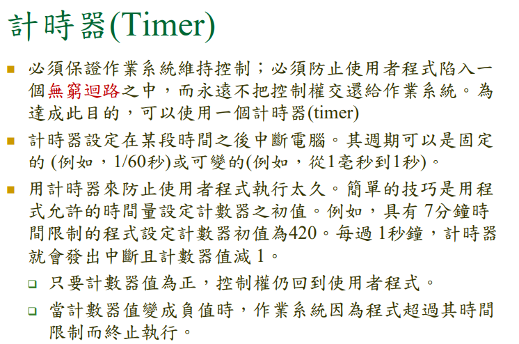
這張圖其實在回答一個很重要的問題：
「如果使用者程式卡在無窮迴路，作業系統怎麼把 CPU 搶回來？」
答案就是：靠計時器（Timer）中斷。
先講整張圖的核心意思
你可以把它想成：
-
使用者程式正在跑
-
作業系統先偷偷設一個鬧鐘
-
時間一到，鬧鐘響＝計時器中斷（timer interrupt）
-
CPU 就會先停下目前的使用者程式
-
控制權回到作業系統
-
作業系統再決定：
-
要不要讓原本程式繼續跑
- 還是換另一個行程
- 還是直接把超時程式終止掉
這就是投影片第一句在講的重點：要保證作業系統永遠維持控制權，不能讓使用者程式一旦跑起來就永遠不還 CPU。
很多作業系統教材都用同樣的說法：核心會先設定硬體 timer，等 timer 到期時產生 interrupt，把控制權交還給 kernel，這樣使用者程式就算在無窮迴路裡，也不能永久霸佔 CPU。(Berea College Faculty)
逐句拆解這張圖
1. 「必須保證作業系統維持控制」
意思是：
作業系統不能把 CPU 交出去之後，就再也拿不回來。
因為如果拿不回來，會出現這種情況：
while (1) {
}
這種 infinite loop（無窮迴路） 如果沒有外力打斷，它就會一直跑。 而在可搶先式排程（preemptive scheduling）裡，外力就是 timer interrupt（計時器中斷）。當 timer 到時，CPU 會被強制轉去跑核心的中斷處理程式，而不是繼續傻傻跑使用者程式。(MIT OpenCourseWare)
2. 「必須防止使用者程式陷入一個無窮迴路」
這句不是在說「程式邏輯上不能寫 while(1)」。
而是在說：
就算使用者程式真的寫了無窮迴路，也不能讓整台系統失控。
這裡要注意一個觀念：
- 無窮迴路 ≠ 一定當機
- 真正危險的是：無窮迴路還一直占著 CPU，不讓 OS 重新排程
如果有 timer，OS 就能定期把 CPU 搶回來，所以單一使用者程式的無窮迴路通常不會直接拖垮整個現代作業系統。MIT 與多份作業系統課程資料都把這件事明確描述成：timer 讓 kernel 可以 preempt（搶先、中止目前執行） 正在跑的 user process。(MIT OpenCourseWare)
3. 「可以使用一個計時器」
這裡的 timer（計時器） 是硬體機制，不是你平常寫程式的那種 sleep() 或計時函式。
它的工作是：
- 核心先設定一個倒數
- 倒數到 0
- 硬體發出中斷
- CPU 轉去執行 OS 的 interrupt handler（中斷處理常式）
也就是說，timer 是 OS 搶回控制權的硬體保險機制。(bourbon.usc.edu)
第二點：為什麼週期可以固定，也可以可變？
投影片說：
- 固定：例如
1/60 秒 - 可變：例如
1ms ~ 1s
意思是 timer 不一定只有一種玩法。
固定週期 timer
像節拍器一樣：
- 每隔固定時間就中斷一次
- OS 每次都檢查要不要切換行程
這很像：
「每 10ms 鬧一次，提醒老師看一下現在誰該上台」
可變週期 timer
由 OS 自己設定下一次什麼時候打斷：
- 某些情況希望很快中斷
- 某些情況希望晚一點再中斷
- 比較有彈性，也更有效率
很多系統課程都提到 timer interval 由 kernel 設定，使用者程式不能隨便改，否則保護機制就失效了。(bourbon.usc.edu)
第三點：投影片的「7 分鐘 → 420」在講什麼？
這裡是在用一個很直觀的例子說明 倒數計數器（countdown counter）。
因為：
- 7 分鐘 = 420 秒
- 如果 timer 每 1 秒中斷一次
- 每中斷一次就讓計數器減 1
所以：
初值 = 420
每秒 -1
420 秒後變成 0
再往下就超時
也就是說，OS 可以把「允許執行多久」轉成「剩多少 tick（節拍）」。
第四點：下面兩個小點最重要
A. 「只要計數器值為正，控制權仍回到使用者程式」
意思是：
timer 每次中斷時，OS 先拿回控制權檢查一下：
- 這個程式還沒超時
- 那就把 CPU 再還給它
- 或者根據排程政策決定是否先換別人跑
注意，這裡投影片是為了講「時間限制」而簡化。 在真正 OS 裡，timer 中斷後不一定會回到同一個程式，還可能：
- 做 context switch（內容切換）
- 讓別的 ready process 先跑
- 更新 accounting（記帳資訊）
- 處理 scheduler 的 time slice（時間片）
MIT 課程資料就提到，timer interrupt 進入 clock handler 後，scheduler 可能儲存目前程序狀態，選另一個程序繼續執行。(MIT OpenCourseWare)
B. 「當計數器值變成負值時，作業系統因為程式超過其時間限制而終止執行」
這是在講：
如果這支程式使用 CPU 太久，超過規定配額，OS 可以強制處理它。
這種處理可能是：
- 終止程式
- 發出錯誤
- 強制排到後面
- 降低優先權
投影片這裡是用「終止」當簡化例子，重點不是一定要 kill，而是： OS 有能力因為 timer 到期而介入。
整個流程可以這樣背
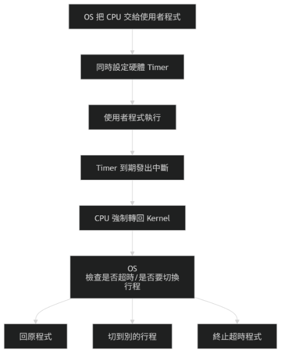
用生活例子理解
想像老師讓同學上台報告，但怕有人一直講不停，所以老師先設一個鬧鐘。
- 同學上台 = 使用者程式執行
- 鬧鐘 = timer
- 鬧鐘一響 = timer interrupt
- 老師打斷他 = kernel 拿回控制權
- 老師決定要不要讓他繼續講 = scheduler / OS decision
所以不是同學自己「有沒有良心下台」， 而是老師保留了強制打斷的權力。
這就是 timer 在 OS 裡的角色。
補一個你很容易混淆的點
計時器不是拿來「知道程式是不是無窮迴路」
這個說法其實不精確。❌
更精確是：
- OS 不一定知道你是不是邏輯上的無窮迴路
- 但 OS 不需要知道
- 它只要定期靠 timer 把 CPU 搶回來就夠了
也就是：
OS 不需要先判斷「你是不是壞人」， 它只要保證「你不能一直霸佔 CPU」。
這點很多教材都強調：timer 的關鍵用途是 regain control（重新取得控制權），而不是猜程式邏輯。(Columbia OS)
社群上常見的理解方式
在 Stack Overflow 上，很多人問過類似問題：「為什麼無窮迴圈不會把 OS 鎖死？」常見回答就是：
- 現代 OS 是 preemptive
- 會靠 timer interrupt
- 中斷一來，使用者程式就會被暫停
- kernel 重新掌控 CPU，再決定下一步
這種說法和課本投影片的概念是一致的。(Stack Overflow)
你可以怎麼背這張圖
直接背這 4 句就夠了：
- Timer 是 OS 拿回 CPU 的工具
- 使用者程式就算無窮迴路，也不能永久霸佔 CPU
- 時間一到，硬體發出 timer interrupt
- OS 拿回控制權後，決定繼續、切換或終止
這跟整堂課的關係是什麼？
這張圖其實是後面很多章節的根。
因為後面你會一直看到它的影子：
- CPU Scheduling（CPU 排班）：沒有 timer，就很難做可搶先式排班
- Process（行程）：行程切換靠 OS 奪回控制權
- Protection（保護）：不能讓 user program 無限制支配硬體
- Dual mode operation（雙模式）：timer 中斷後會回到 kernel mode
- Time sharing（分時系統）：多個使用者輪流用 CPU，本質就靠 timer 在切
所以這張圖不是在單講一個小硬體元件而已， 它其實是在回答：
作業系統憑什麼能公平分配 CPU，而且不被壞掉的程式拖走？
如果你要，我下一則可以接著幫你把這一張和前一張 Dual mode operation（雙模式運作） 串起來，整理成一個「從 user mode 到 timer interrupt 再回 kernel mode」的完整流程圖。
前面說到 job pool 會放很多工作，一個一個做，然後不同軟體會交替做，以達到多工。那我A軟體執行時，怎樣才會換B軟體
會換到 B 軟體，通常有兩大類情況：
一句話先講答案
A 軟體不是「自己想停才停」，而是作業系統在某些事件發生時，拿回 CPU，再決定要不要改讓 B 跑。
最常見的 4 種切換時機
1. A 的時間片（time slice / time quantum，時間片）用完
這是最典型的多工來源。
流程是：
- A 正在跑
- 硬體 timer（計時器） 到點，發出 timer interrupt（計時器中斷）
- CPU 先回到 kernel mode
- OS 的 scheduler（排程器） 檢查 ready queue
- 如果 B 也在等 CPU，OS 可能就改讓 B 跑
這就是 preemptive scheduling（搶先式排程）： A 就算沒有自願停下來，OS 也能把它打斷。這是現代多工作業系統的核心機制。(卡內基梅隆大學)
2. A 自己進入等待（blocking）
例如 A 做這些事：
- 讀檔案
- 等鍵盤輸入
- 等網路資料
sleep()- 等磁碟 I/O 完成
這時 A 不能繼續往下做，就會從 running（執行中） 變成 waiting / blocked（等待中）。 既然 A 在等，CPU 就不該閒著，所以 OS 會挑另一個 ready 的程式，像 B，來跑。這也是標準排程觸發條件之一。(卡內基梅隆大學)
3. A 執行完了
這最直觀：
- A 結束
- CPU 空出來
- OS 從 ready queue 挑下一個
- B 有機會上 CPU
這種不是「搶走」，而是 A 已經結束了。(卡內基梅隆大學)
4. 有更該跑的程式出現
這通常出現在 priority scheduling（優先權排程）。
例如：
- A 正在跑
- 某個事件讓 B 從 waiting 變 ready
- 而且 B 優先權比較高
- OS 可能立刻搶走 A 的 CPU，改給 B
也就是說，不只是 timer 到期才會切； 某些排程政策下，只要更重要的工作出現，也會切。 (GeeksforGeeks)
你前面說的 job pool / 多工，真正切換時發生了什麼？
不是「A 跑一半，B 自己插進來」。
而是這樣：
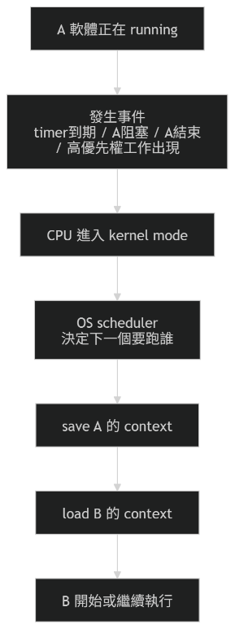
這裡的 context（執行脈絡），可以先簡單理解成：
- A 跑到哪一行
- CPU 暫存器內容
- stack 指標
- 程式計數器 PC
OS 會先把 A 的狀態存起來，再把 B 之前存好的狀態讀回來，這叫 context switch（情境切換／內容切換）。(TechTarget)
用生活例子理解
想像只有一位廚師（CPU），有兩張訂單：
- A 軟體 = 炒飯
- B 軟體 = 煮麵
廚師不可能同一瞬間真的同時炒飯又煮麵。 所謂多工，是：
- 先做一下炒飯
- 時間到先停
- 去看煮麵
- 麵在等水滾時，再回去炒飯
- 不斷切換
什麼時候會從 A 換 B？
就像：
- 時間到：老師規定每人講 30 秒就換下一位
- A 在等材料：炒飯要等蛋送來，那先去煮麵
- A 做完了：那當然換 B
- B 很急：例如 VIP 訂單先做
這就是 OS 的排程邏輯。
你這裡有一個容易混淆的點，我幫你校正一下
你說「job pool 會放很多工作，一個一個做，然後不同軟體會交替做，以達到多工」。
這句方向大致對，但更精確一點要改成：
比較精確的說法
- job pool 比較偏「系統裡等待被載入或等待資源的工作集合」
- 真正 CPU 要挑誰跑，常講的是 ready queue（就緒佇列）
- 多工不是單純「一個一個做完」，而是 在多個 process 之間快速切換
- 切換是否發生，取決於 timer、blocking、結束、排程政策
也就是說，A 換 B 不是因為「job pool 自己輪到 B」，而是因為：
OS 拿回控制權後，從 ready queue 選了 B。
你可以直接背這個版本
A 軟體換成 B 軟體，是因為作業系統在某個時機點拿回 CPU，然後排程器決定把 CPU 從 A 切給 B。
常見時機：
- timer 到期
- A 等 I/O
- A 結束
- 更高優先權的 B 出現 (卡內基梅隆大學)
這跟整堂課的關係
這題其實正好把前面幾個章節串起來了：
- Dual mode operation（雙模式）：timer 一到，CPU 才能回 kernel
- Timer（計時器）：讓 OS 不會被 A 永久霸佔 CPU
- Process scheduling（行程排程）：OS 決定接下來是 A 還是 B
- Context switch（情境切換）：真的把 A 換成 B 的技術細節
所以你現在問的這句話，本質上就是在問：
「作業系統到底靠什麼把 CPU 從目前這個程式手上拿回來，交給下一個程式？」
這就是後面 CPU scheduling 章節的核心。
⭐ 下一步我們可以直接做一個超簡單的「A 跑 10ms → timer 中斷 → 存 A → 載入 B → B 跑」逐格動畫式解釋。
行程管理
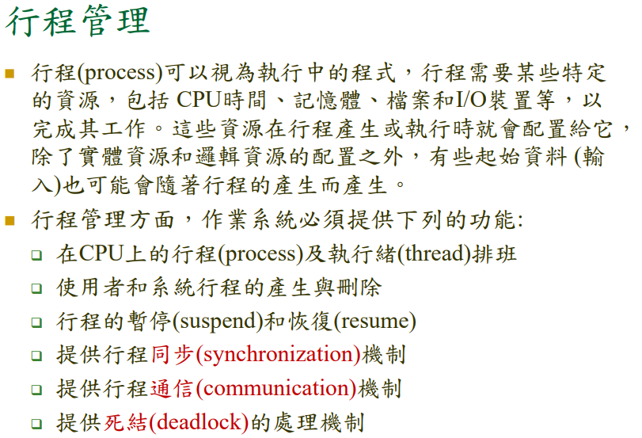
這張圖其實在回答：
「作業系統到底要管行程（process）哪些事？」
你前面一直在問「A 怎麼換成 B」、「timer 怎麼讓 OS 把 CPU 搶回來」，那一題其實只是在**行程管理（process management）**裡面的其中一小塊：排班（scheduling）。這張圖是在把整個範圍一次列給我們看。投影片本身就寫到：行程是「執行中的程式」，而作業系統必須負責行程/執行緒排班、建立與刪除、暫停與恢復、同步、通信，以及死結處理。
先抓核心一句話
行程管理 = 作業系統負責管理「有哪些程式正在活著、各自拿了哪些資源、現在誰該跑、彼此怎麼合作、卡死時怎麼救」的整套機制。
第一行：什麼是行程 process？
投影片說：
行程 (process) 可以視為執行中的程式。
這句要特別注意，因為很多初學者會把這兩個混在一起。
程式 program
比較像：
- 硬碟上的一個
.exe - 一份靜態的指令與資料
- 還沒跑起來
行程 process
比較像：
- 這份程式真的被載入記憶體並開始執行
- 有自己的狀態、資源、執行位置
- 是「活的」
所以可以這樣背：
program 是菜單，process 是正在做菜的那個廚房工作。
教材也同樣定義：process 是 a program in execution，而且它需要 CPU time、memory、files、I/O devices 等資源才能完成工作。
為什麼行程需要資源？
投影片列了幾個典型資源：
- CPU time（CPU 時間）
- memory（記憶體）
- files（檔案）
- I/O devices（輸入輸出裝置）
這很好理解。假設你開一個瀏覽器：
- 它要 CPU 幫它算
- 要 RAM 放程式碼、分頁資料
- 要檔案系統讀快取、設定檔
- 要網卡收資料
- 要螢幕輸出畫面
- 要鍵盤滑鼠收操作
所以「行程」不是只有指令而已，它是一整包正在工作的執行實體。這也正是為什麼 OS 必須幫它配置資源。
第二大段：作業系統在行程管理上要做哪些事？
這張圖列了 6 件事。我們一個一個拆。
1. 在 CPU 上的行程與執行緒排班
英文是 process / thread scheduling（行程／執行緒排班）
這就是你前面一直問的那塊。
意思是：
- 現在 ready queue 裡有很多能跑的行程
- 但 CPU 同一瞬間只能真正執行一個（先以單核心來看）
- OS 要決定現在輪到誰跑
教材在 Process Scheduling 那段也寫得很清楚：多元程式規劃的目標是讓 CPU 儘量一直有行程在跑；分時系統則是讓 CPU 在不同行程間不斷切換，讓使用者感覺大家都在動。
用生活例子
只有一台收銀機（CPU），但很多客人（process）在排隊。 店長（scheduler）要決定現在先服務誰。
這和你前面那題的關係
你問的：
「A 軟體執行時，怎樣才會換 B 軟體？」
答案就是：
- timer 到期
- A 等 I/O
- A 結束
- 更高優先權工作出現
然後 OS 的 scheduler 決定是不是換成 B。這正是「排班」的工作。
2. 使用者和系統行程的產生與刪除
英文是 creation and deletion of user and system processes（使用者/系統行程的建立與刪除）
這表示 OS 要負責：
- 建立新行程
- 結束行程
- 清理它留下的資源
例如：
- 你雙擊 Chrome，OS 建立一個新行程
- 你關閉 Chrome，OS 回收它的資源
- 有些背景服務也是 OS 自己建立的 system process
很多教材都把這列為 OS 的基本責任之一。O’Reilly 的《Operating System Concepts》內容摘要也列出：OS 要負責 user/system process 的建立、刪除、排程、同步、通信與死結處理。(O'Reilly)
生活例子
像公司的人資：
- 新人報到 → 建檔、發門禁卡、配電腦
- 離職 → 收回門禁、收回設備、刪權限
這就像 process create / terminate。
3. 行程的暫停 suspend 和恢復 resume
這個很多人第一次看會誤會成「程式結束」。
不是。
suspend（暫停）
表示先讓它停下來，不繼續跑，但不一定消失。
resume（恢復）
表示之後再讓它從原本狀態繼續跑。
你可以把它想成：
- 影片按暫停，不是把影片刪掉
- 之後按播放，從原位置繼續
在 OS 裡，暫停可能出現在：
- 等待某事件
- 被使用者或系統要求暫停
- 記憶體壓力、換出等策略
- 除錯（debug）時停住
4. 提供行程同步 synchronization 機制
這是很核心、也很常考的一塊。
synchronization（同步）在這裡不是「同時開始」而已
它比較精確是指：
當多個行程/執行緒共同使用共享資料或共享資源時，要保證先後次序與資料一致性。
如果沒有同步，會發生什麼？
假設：
- A 和 B 都要改同一個變數
count - 本來
count = 5 - A 讀到 5，準備寫 6
- B 也讀到 5，準備寫 6
- 最後兩邊都寫回 6
但我們本來期待的是 7。 這種錯就是 race condition（競爭條件）。
你們教材第 6 章就專門在講這件事，包含：
- critical section（臨界區）
- mutual exclusion（互斥）
- progress（進行）
- bounded waiting（有限等待）
- mutex、semaphore 等工具。
生活例子
兩個人同時改同一份 Google 試算表，沒有規則就很容易互相蓋掉資料。 同步機制就像「一次只准一個人進去改」或「先做完 A 再做 B」。
5. 提供行程通信 communication 機制
英文是 interprocess communication, IPC（行程間通訊）
意思是：
不同行程彼此需要交換資料、發送訊息、合作完成工作。
因為行程通常彼此隔離，不能直接亂讀對方記憶體，所以要有 OS 提供的合法溝通方式。
教材裡列了很多例子：
- message passing（訊息傳遞）
- shared memory（共享記憶體）
- pipes（管線）
- sockets（插座）
- RPC（遠端程序呼叫）等。
生活例子
不同部門不能直接翻別人的抽屜，但可以：
- 寄信
- 留便條
- 用共用資料夾
- 透過櫃台轉交
這些就像 IPC。
同步 vs 通信 很多人會混
這裡我幫你直接分開：
- communication（通信）：重點是「資料怎麼傳過去」
- synchronization（同步）：重點是「誰先誰後、怎麼避免撞車」
你可以記成：
通信管的是「說話」；同步管的是「說話順序與規則」。
6. 提供死結 deadlock 的處理機制
這又是另一個大章節。
deadlock（死結）
是指幾個行程彼此都在等對方手上的資源，結果誰都走不下去。
例如：
- A 拿著印表機，等掃描器
- B 拿著掃描器，等印表機
- 兩邊都不放
- 就卡住了
教材第 7 章也明確把 deadlock 當成行程管理要處理的內容之一，並介紹預防、避免、偵測與恢復等方法。
社群上常見的誤解
社群上常有人把 deadlock 和 scheduling 混在一起，以為換個排程法就能避免死結；但 Stack Overflow 上對這類問題的回答很一致：deadlock 的根源是資源鎖定與等待關係，不是單純的 CPU 排程順序。 換句話說，FCFS 之類的排程法本身不保證不會 deadlock。(Stack Overflow)
這張圖最重要的真正脈絡
你可以把這 6 項分成三群來記：
第一群：讓行程「活起來」
- 建立 / 刪除
- 暫停 / 恢復
第二群：讓行程「輪流跑」
- 排班 scheduling
第三群：讓多個行程「合作但不要出事」
- 同步 synchronization
- 通信 communication
- 死結 deadlock handling
用一個完整例子把 6 件事串起來
假設你在 Win11 開一個瀏覽器下載檔案：
-
你雙擊瀏覽器 → OS 建立 process。
-
瀏覽器和背景下載服務都想跑 → OS 做 scheduling，決定誰先用 CPU。
-
下載時要和網路服務、快取程序交換資料 → 用 communication。
-
多個執行緒同時更新下載進度與檔案緩衝區 → 需要 synchronization。
-
你把瀏覽器視窗暫時掛起或背景化 → 某些活動可能被 suspend，之後再 resume。
-
如果幾個程序彼此鎖住資源 → OS 要做 deadlock handling。
-
你關閉瀏覽器 → OS 刪除 process 並回收資源。
這樣你就會發現： 這張圖其實不是 6 個分散名詞，而是一個行程從出生到合作到結束的完整生命週期管理。
你可以這樣背這張圖
我建議你背成一句口訣：
生、排、停、同、通、死
也就是：
- 生：建立/刪除
- 排：排班
- 停：暫停/恢復
- 同：同步
- 通：通信
- 死：死結處理
再幫你補一個很容易被考的點：process 和 thread 的關係
投影片寫的是：
在 CPU 上的行程(process)及執行緒(thread)排班
這表示 OS 不只管理 process，也會管理 thread。 可以先這樣理解：
- process（行程）：像一間公司
- thread（執行緒）：像公司裡真正做事的人
一個 process 可以有多個 threads。教材也提到，現代作業系統通常支援一個 process 裡面有多個 thread。(O'Reilly)
這張圖和整堂課的關係
這張圖非常重要，因為它其實是在幫你把後面整學期的章節先點名一次：
- Processes（行程）：什麼是 process、PCB、state、queue
- Threads（執行緒）：一個 process 裡多條執行流
- CPU Scheduling（CPU 排班）：A 為什麼換成 B
- Process Synchronization（行程同步）：mutex、semaphore、critical section
- Deadlocks（死結）：四個必要條件、預防、避免、恢復
所以這張投影片的功能，其實是：
先告訴我們：行程管理不是只有「跑程式」而已，而是整門課後半段很多章節的總地圖。
如果你要，我下一則我可以直接幫你把這一張整理成一張 「行程管理總心智圖」，把 process / scheduling / synchronization / communication / deadlock 全部串在一起，讓你一眼看懂整學期脈絡。
主記憶體管理
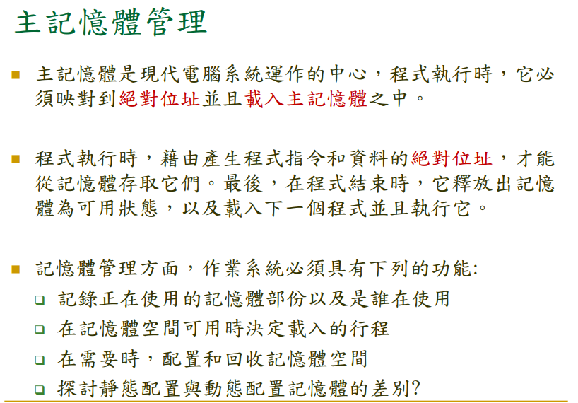
這張圖其實在回答的問題是：
「程式要執行，為什麼一定牽涉到主記憶體（main memory），而作業系統又到底在管什麼？」
先講結論：
主記憶體管理（main memory management），就是作業系統負責管理 RAM 裡面的空間分配、回收、保護、搬移與位址對應，讓多個程式能安全而有效率地執行。程式若要真的跑起來，至少它要有一部分被載入主記憶體；而在現代作業系統裡，CPU 通常先產生的是 logical address / virtual address（邏輯位址／虛擬位址），再由硬體與 OS 配合轉成 physical address（實體位址），不會單純讓一般程式直接操作真正的實體位址。這點其實比投影片上的「絕對位址」說法更接近現代系統。(伊利諾伊大學芝加哥分校計算機科學系)
先幫我們抓這張圖的主軸
這張投影片可以拆成 3 個核心：
- 程式執行需要記憶體
- 作業系統要知道誰用了哪一塊記憶體
- 作業系統要決定誰可以進來、誰要出去、空間怎麼分配與回收
所以它本質上是在講：
RAM 不是單純「放資料的地方」，而是作業系統要持續管理的有限資源。
第一點：為什麼主記憶體是電腦運作的中心？
因為 CPU 真正要執行指令時，必須能快速取得：
- 指令（instruction）
- 資料（data）
- 執行時狀態（例如 stack、heap、變數）
而主記憶體，也就是 RAM，就是 CPU 工作時主要直接接觸的地方。教材對主記憶體的基本描述也是：process 必須被載入 memory 才能執行；若記憶體不夠，作業系統還會做 swapping（交換）或更進一步用 paging/virtual memory 來管理。(伊利諾伊大學芝加哥分校計算機科學系)
你可以用生活例子記：
- 硬碟像倉庫
- RAM像工作桌
- CPU像正在做事的人
東西放在倉庫裡不代表你現在就能順手操作；要真的處理，通常得先搬到工作桌上。
第二點：投影片寫「映對到絕對位址」這句，要怎麼理解？
這句有教材脈絡上的合理性，但如果拿來描述現代 OS，會太簡化。
比較早期或簡化教材的說法
程式在執行前，會被綁定到某些位址，最後放到主記憶體裡，才能存取。這是在講 address binding（位址繫結／位址綁定） 的概念。位址可以在不同階段被決定：
- compile time binding（編譯時繫結）
- load time binding（載入時繫結）
- execution time binding（執行時繫結） (伊利諾伊大學芝加哥分校計算機科學系)
但現代 OS 更精確的說法
現代系統大多不是讓一般程式直接用「真正的實體位址」思考，而是：
- CPU 產生 logical / virtual address（邏輯／虛擬位址）
- MMU（Memory Management Unit，記憶體管理單元） 根據 page table 等資料把它轉成 physical address（實體位址）
- 真正去 RAM 抓資料的是轉換後的 physical address。(伊利諾伊大學芝加哥分校計算機科學系)
所以如果我們要勇敢校正這張投影片：
把「一定要映對到絕對位址」理解成「最終一定要對應到可被記憶體硬體使用的位址」比較精確。 在現代 OS 語境下，這通常會經過虛擬位址到實體位址的轉換，而不是使用者程式直接碰實體位址。(伊利諾伊大學芝加哥分校計算機科學系)
第三點：投影片第二段在說什麼？
它在講的是這個流程：
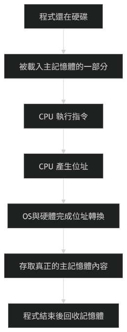
也就是：
- 程式不是永遠固定待在 RAM
- 它進來、執行、結束、離開
- 空出的位置再給下一個程式
這也是投影片最後一句「釋放出記憶體為可用狀態，載入下一個程式」的意思。若 RAM 不夠，OS 還可能把某些 process 換出到磁碟，再視需要換回。這就是 swapping（交換） 的基本概念。(伊利諾伊大學芝加哥分校計算機科學系)
第四點：作業系統在記憶體管理上到底要做哪些事？
投影片下面列的幾點，其實非常重要。我們一個一個拆。
1. 記錄正在使用的記憶體部分，以及是誰在使用
這代表 OS 要知道：
- 哪些空間已分配
- 哪些空間空著
- 每塊空間屬於哪個 process
- 是否可讀、可寫、可執行
不然它根本無法保證：
- A 程式不會踩到 B 程式
- 新程式載入時不會撞位址
- 結束時知道要回收哪一塊
這也是記憶體管理最基本的 bookkeeping（記帳／追蹤）工作。(GeeksforGeeks)
2. 在記憶體空間可用時，決定載入的行程
這就是 admission / allocation decision（是否讓某行程進入記憶體）。
因為 RAM 有限，不可能所有 job/process 都同時完整放進去。 所以 OS 要決定：
- 誰先進來
- 誰先留在 RAM
- 誰先被換出
- 哪一塊空間給誰
這和 multiprogramming（多元程式設計）直接相關：OS 希望 RAM 裡同時有足夠多的 process，讓 CPU 不容易閒著。(伊利諾伊大學芝加哥分校計算機科學系)
3. 在需要時，配置和回收記憶體空間
這就是 allocation / deallocation（配置／釋放）。
例如：
- 開新程式要分配記憶體
- 建立資料結構時要分空間
- 程式結束或物件釋放時要回收
如果不回收，就會浪費 RAM；如果分配方式不好，還會產生 fragmentation（碎裂） 問題。尤其在連續配置模型裡，容易遇到 external fragmentation（外部碎裂），也就是總空間明明夠，但零零散散，湊不出一塊連續大空間。(GeeksforGeeks)
第五點：投影片最後提到「靜態配置」和「動態配置」差別，這怎麼懂？
這裡很容易混，所以我直接用最白話的方式講。
靜態配置（static allocation）
意思是： 在執行前或一開始，就先決定好要用多少記憶體，之後不太改。
特徵通常是：
- 大小比較固定
- 規劃簡單
- 彈性差
- 可能浪費空間
像 C 語言裡：
int a[1000];
這種大小先寫死，就很接近靜態配置的感覺。
動態配置（dynamic allocation）
意思是： 執行到一半，依照實際需要再向系統要空間。
特徵通常是：
- 較有彈性
- 記憶體利用率較好
- 管理較複雜
- 若用不好可能造成 leak（記憶體洩漏）或碎裂
像：
- C 的
malloc/free - C++ 的
new/delete - Python 雖然不手動 free，但底層仍然是動態配置為主
用生活例子記
- 靜態配置：吃飯前先把 10 人份便當全部訂好，不管今天來幾個人
- 動態配置：誰來再叫誰的份量，彈性比較高
這個概念在 OS 裡會一路延伸到：
- 連續配置
- 分頁 paging
- 分段 segmentation
- 虛擬記憶體 virtual memory
因為本質都在問： 記憶體空間到底要先固定，還是按需求動態處理？ (GeeksforGeeks)
這張圖有一個很值得你注意的「為什麼」
你可能會問：
「既然 RAM 這麼重要，為什麼不把所有程式全部一直放在 RAM 就好？」
因為做不到，理由至少有 3 個：
- RAM 有限，而且比磁碟貴
- 同時開很多程式時，總需求常常超過實體記憶體
- 不是所有程式的所有部分都會同時用到
所以現代 OS 才會發展出：
- swapping
- paging
- demand paging
- virtual memory
也就是： 不是整支程式永遠完整住在 RAM，而是需要的部分先進來，不需要的部分晚點再處理。 (GeeksforGeeks)
社群上常見的理解方式
在 Stack Overflow 這類社群裡，常見一個學生會卡住的點是：
「程式看到的位址，真的是 RAM 上的實體位址嗎？」
主流回答很一致：在現代作業系統裡，通常不是。 程式通常操作的是虛擬位址；它可能暫時根本還沒有對應到 RAM 裡的某個實體頁框，直到發生 page fault 才被載入。這和課本上把流程簡化成「載入主記憶體、位址對應、存取」的畫法不同，但本質上是在講同一件事：OS 必須管理地址與記憶體資源的關係。 (Stack Overflow)
你可以怎麼背這張圖
我建議你背成這 4 句：
- 程式要跑，必須有記憶體資源
- OS 要知道哪塊記憶體被誰使用
- OS 要負責分配、回收、決定誰能載入
- 現代系統會做位址轉換，不是程式直接碰實體位址
這跟整堂課的關係是什麼？
這張圖其實是在幫後面記憶體章節鋪路。
前面我們談的是：
- dual mode operation（雙模式）
- timer（計時器）
- process management（行程管理）
那些都比較偏 CPU 與控制權。
而這張開始把重心轉到另一個超大主題：
記憶體怎麼切、怎麼保護、怎麼讓多個程式共存？
後面你很可能會一路碰到：
- address binding（位址繫結）
- logical / physical address（邏輯／實體位址）
- swapping（交換）
- paging（分頁）
- segmentation（分段）
- virtual memory（虛擬記憶體）
所以這張不是單純在說 RAM 很重要而已，而是在回答：
「CPU 要跑程式沒錯，但這些程式到底住哪裡、怎麼合法地住、住不下怎麼辦？」
這正是記憶體管理整章的主線。
⭐ 下一步我們可以只做 2 步，把這張圖和你前面學的 process 串起來： ⭐ 1. 我幫你畫一張「程式從硬碟進 RAM，再由 CPU 執行」的完整流程圖。 ⭐ 2. 再幫你專門拆「絕對位址、邏輯位址、實體位址、虛擬位址」四個名詞的差別。
logical / virtual address 和 physical address 是啥
不完全對。「logical / virtual address（邏輯／虛擬位址）」不是只是變數名稱。 這裡我們要拆得更精確一點。
先直接判斷你這句話
1. 「logical / virtual address 只是一個變數名稱」
❌ 不對
它不是單純「名稱」，而是：
程式所在的那個虛擬位址空間中的位址值。
它可以對應到很多東西，例如：
- 指令所在位置
- 變數所在位置
- 陣列元素位置
- stack（堆疊）上的資料
- heap（堆積）上的配置空間
- pointer（指標）裡存的位址值
Linux 核心文件寫得很明確：每一次記憶體存取都使用 virtual address，再由 page tables 把 virtual address 轉成 physical address。(Linux Kernel 文檔)
所以更正確的說法是：
logical / virtual address 是程式看到、CPU 先拿來用的位址表示法，不只是變數名稱。
2. 「physical address 是 RAM 中的實體位置」
✅ 大方向對
更精確地說：
physical address（實體位址）是記憶體硬體最終要用來定位實體記憶體頁框（page frame）的位置。
Linux 文件說 page tables 會把 virtual addresses as seen by the CPU 轉成 physical addresses as seen on the external memory bus。(Linux Kernel 文檔)
所以你可以把它理解成：
- virtual address：程式/CPU 這邊先看到的位址
- physical address：RAM 這邊最後真正落地的位置
3. 「磁碟位置只有在 OS 讀檔案時才會用到」
❌ 太窄了
讀檔案只是其中一種情況。 磁碟位置還會在這些情況用到：
- 載入可執行檔到記憶體時
- 讀一般檔案時
- memory-mapped file（記憶體映射檔案） 時
- page fault（缺頁） 時，若那頁的後備來源在磁碟
- swap / paging file（交換區／分頁檔） 進出時
- 把髒頁（dirty page）寫回磁碟時
Windows 官方文件明確說，系統會在實體記憶體不足時，把部分頁面移到磁碟上的 paging file；而程式本身仍只操作自己的 virtual address space。(Microsoft Learn)
Stack Overflow 上常見的解釋也一致：某個 virtual page 不一定當下就在 RAM，它可能對應到記憶體映射檔案、page file，或暫時根本還沒載入；等程式真的碰到那頁時，才由 page fault 觸發 OS 去處理。(Stack Overflow)
我們把三者一次分清楚
A. virtual / logical address 是什麼？
它是程式視角的位址。
例如你在程式裡有：
int x = 5;
int *p = \&x
這裡 p 裡面存的那個位址，對使用者程式來說，通常就是某個 virtual address。 CPU 執行讀寫指令時，也會先用這種位址。(Linux Kernel 文檔)
所以它不是只有「變數名稱」：
x是名稱&x才是位址- 那個位址通常是 process 的 virtual address
B. physical address 是什麼？
它是硬體視角的位址。
MMU（記憶體管理單元）會把 virtual address 轉成 physical address，最後 RAM 控制器依這個 physical address 找到真正的記憶體位置。(Linux Kernel 文檔)
C. 磁碟位置是什麼？
它不是記憶體位址，而是儲存體/檔案系統在管的東西。
它可能表現成：
- 某個檔案的 block / extent
- 某個可執行檔的某段內容在磁碟哪裡
- paging file / swap 裡的某頁在哪裡
所以磁碟位置和 RAM 位址是兩套不同概念。
用一句超直白的話講
你可以改成這樣記：
變數名稱是名字；virtual address 是程式看到的地址；physical address 是 RAM 真正的位置；磁碟位置是資料在硬碟/SSD 上的存放位置。
什麼時候 CPU 只管 virtual address？
對一般使用者程式來說，幾乎可以這樣想：
CPU 執行程式時，先碰的是 virtual address。
之後硬體自動做轉換：
- virtual → physical
這個轉換對應用程式通常是透明的。Windows 官方文件也明確說，應用程式只操作自己的 virtual address spaces，系統對 physical memory 的搬移是透明的。(Microsoft Learn)
什麼時候 OS 需要知道磁碟位置？
這裡你可以背成 4 大類。
1. 程式/檔案還沒進 RAM，要先載入
例如你打開一個 .exe 或讀一個 .txt。 OS 要先知道這個檔案在磁碟哪裡，才能把內容搬進 RAM。(Microsoft Learn)
2. 發生 page fault
程式碰到某個 virtual page，但那頁目前不在 RAM。 OS 要去找這頁的後備來源，可能是：
- 可執行檔
- shared library
- mmap 的檔案
- swap/pagefile 然後把它載入 RAM。(Linux Kernel 文檔)
3. 系統把頁面換出到磁碟
RAM 不夠時，系統可能把某些頁面丟到 paging file / swap。 之後又要用到時，OS 必須知道那些頁在磁碟哪裡。(Microsoft Learn)
4. memory-mapped file
程式看起來像在讀記憶體，但背後其實對應到磁碟檔案。 這時 virtual address 背後的來源就是檔案在磁碟上的內容。(Stack Overflow)
用生活例子再對一次
假設你在圖書館：
- 變數名稱：書名《作業系統》
- virtual address：你筆記上寫「我要第 50 頁」
- physical address：這本書現在真的放在你桌上右上角
- 磁碟位置：這本書原本放在地下倉庫第 3 排第 8 格
你讀書時，主要是在看「第 50 頁」這種工作視角。 只有當桌上沒有這本書時，館員才需要去查倉庫位置把它搬來。
這就很像：
- CPU 平常用 virtual address
- MMU 轉成 physical address
- OS 只有在需要載入/換頁時才去碰磁碟位置
所以你的句子，建議改成這個版本
你原本那句可以修成：
logical / virtual address 不是只是變數名稱，而是程式看到的位址；physical address 是 RAM 的實體位置；磁碟位置不只在一般讀檔時會用到，也會在載入程式、page fault、swap、memory-mapped file 等情況用到。
這跟整堂課的關係
你現在其實已經踩到記憶體管理最核心的分界線了：
- 程式看到的位址 不等於 RAM 真正的位置
- RAM 的位置 也不等於 磁碟的位置
後面講：
- paging
- page table
- page fault
- virtual memory
- memory-mapped file
本質上都在處理這三層之間怎麼對應。
⭐ 下一步我建議我們直接做一張「變數名稱 → virtual address → physical address → disk backing store」的四層對照圖，這樣你會一次完全通。